<!DOCTYPE html><html lang="zh-CN" data-theme="light"><head><meta charset="UTF-8"><meta http-equiv="X-UA-Compatible" content="IE=edge"><meta name="viewport" content="width=device-width, initial-scale=1.0, maximum-scale=1.0"><title>Linux漫游——时间与系统限制 | Hello World!</title><meta name="author" content="Charlie Chen"><meta name="copyright" content="Charlie Chen"><meta name="format-detection" content="telephone=no"><meta name="theme-color" content="#ffffff"><meta name="description" content="​         时间程序可能会关注两种时间类型。  真实时间：度量这一时间的起点有二：一为某个标准点；二为进程生命周期内的某个固定时点（通常为程序启动）。前者为日历（calendar）时间，适用于需要对数据库记录或文件打上时间戳的程序；后者则称之为流逝（elapsed）时间或挂钟（wall clock）时间，主要针对需要周期性操作或定期从外部输入设备进行度量的程序。 进程时间：一个进程所使用的">
<meta property="og:type" content="article">
<meta property="og:title" content="Linux漫游——时间与系统限制">
<meta property="og:url" content="http://charliechen114514.github.io/2023/08/30/Linux%E6%BC%AB%E6%B8%B8%E2%80%94%E2%80%94%E6%97%B6%E9%97%B4%E4%B8%8E%E7%B3%BB%E7%BB%9F%E9%99%90%E5%88%B6/index.html">
<meta property="og:site_name" content="Hello World!">
<meta property="og:description" content="​         时间程序可能会关注两种时间类型。  真实时间：度量这一时间的起点有二：一为某个标准点；二为进程生命周期内的某个固定时点（通常为程序启动）。前者为日历（calendar）时间，适用于需要对数据库记录或文件打上时间戳的程序；后者则称之为流逝（elapsed）时间或挂钟（wall clock）时间，主要针对需要周期性操作或定期从外部输入设备进行度量的程序。 进程时间：一个进程所使用的">
<meta property="og:locale" content="zh_CN">
<meta property="og:image" content="http://charliechen114514.github.io/img/passagepage.png">
<meta property="article:published_time" content="2023-08-30T07:55:36.000Z">
<meta property="article:modified_time" content="2023-08-30T07:56:24.658Z">
<meta property="article:author" content="Charlie Chen">
<meta property="article:tag" content="C&#x2F;C++. Linux">
<meta name="twitter:card" content="summary">
<meta name="twitter:image" content="http://charliechen114514.github.io/img/passagepage.png"><link rel="shortcut icon" href="/img/webicon.png"><link rel="canonical" href="http://charliechen114514.github.io/2023/08/30/Linux%E6%BC%AB%E6%B8%B8%E2%80%94%E2%80%94%E6%97%B6%E9%97%B4%E4%B8%8E%E7%B3%BB%E7%BB%9F%E9%99%90%E5%88%B6/index.html"><link rel="preconnect" href="//cdn.jsdelivr.net"/><link rel="preconnect" href="//busuanzi.ibruce.info"/><link rel="stylesheet" href="/css/index.css"><link rel="stylesheet" href="https://cdn.jsdelivr.net/npm/@fortawesome/fontawesome-free/css/all.min.css" media="print" onload="this.media='all'"><link rel="stylesheet" href="https://cdn.jsdelivr.net/npm/@fancyapps/ui/dist/fancybox.min.css" media="print" onload="this.media='all'"><script>const GLOBAL_CONFIG = { 
  root: '/',
  algolia: undefined,
  localSearch: {"path":"/search.xml","preload":false,"languages":{"hits_empty":"找不到您查询的内容：${query}"}},
  translate: undefined,
  noticeOutdate: undefined,
  highlight: {"plugin":"highlighjs","highlightCopy":true,"highlightLang":true,"highlightHeightLimit":false},
  copy: {
    success: '复制成功',
    error: '复制错误',
    noSupport: '浏览器不支持'
  },
  relativeDate: {
    homepage: false,
    post: false
  },
  runtime: '',
  date_suffix: {
    just: '刚刚',
    min: '分钟前',
    hour: '小时前',
    day: '天前',
    month: '个月前'
  },
  copyright: undefined,
  lightbox: 'fancybox',
  Snackbar: undefined,
  source: {
    justifiedGallery: {
      js: 'https://cdn.jsdelivr.net/npm/flickr-justified-gallery/dist/fjGallery.min.js',
      css: 'https://cdn.jsdelivr.net/npm/flickr-justified-gallery/dist/fjGallery.min.css'
    }
  },
  isPhotoFigcaption: false,
  islazyload: false,
  isAnchor: false,
  percent: {
    toc: true,
    rightside: false,
  }
}</script><script id="config-diff">var GLOBAL_CONFIG_SITE = {
  title: 'Linux漫游——时间与系统限制',
  isPost: true,
  isHome: false,
  isHighlightShrink: false,
  isToc: true,
  postUpdate: '2023-08-30 15:56:24'
}</script><noscript><style type="text/css">
  #nav {
    opacity: 1
  }
  .justified-gallery img {
    opacity: 1
  }

  #recent-posts time,
  #post-meta time {
    display: inline !important
  }
</style></noscript><script>(win=>{
    win.saveToLocal = {
      set: function setWithExpiry(key, value, ttl) {
        if (ttl === 0) return
        const now = new Date()
        const expiryDay = ttl * 86400000
        const item = {
          value: value,
          expiry: now.getTime() + expiryDay,
        }
        localStorage.setItem(key, JSON.stringify(item))
      },

      get: function getWithExpiry(key) {
        const itemStr = localStorage.getItem(key)

        if (!itemStr) {
          return undefined
        }
        const item = JSON.parse(itemStr)
        const now = new Date()

        if (now.getTime() > item.expiry) {
          localStorage.removeItem(key)
          return undefined
        }
        return item.value
      }
    }
  
    win.getScript = url => new Promise((resolve, reject) => {
      const script = document.createElement('script')
      script.src = url
      script.async = true
      script.onerror = reject
      script.onload = script.onreadystatechange = function() {
        const loadState = this.readyState
        if (loadState && loadState !== 'loaded' && loadState !== 'complete') return
        script.onload = script.onreadystatechange = null
        resolve()
      }
      document.head.appendChild(script)
    })
  
    win.getCSS = url => new Promise((resolve, reject) => {
      const link = document.createElement('link')
      link.rel = 'stylesheet'
      link.href = url
      link.onload = () => resolve()
      link.onerror = () => reject()
      document.head.appendChild(link)
    })
  
      win.activateDarkMode = function () {
        document.documentElement.setAttribute('data-theme', 'dark')
        if (document.querySelector('meta[name="theme-color"]') !== null) {
          document.querySelector('meta[name="theme-color"]').setAttribute('content', '#0d0d0d')
        }
      }
      win.activateLightMode = function () {
        document.documentElement.setAttribute('data-theme', 'light')
        if (document.querySelector('meta[name="theme-color"]') !== null) {
          document.querySelector('meta[name="theme-color"]').setAttribute('content', '#ffffff')
        }
      }
      const t = saveToLocal.get('theme')
    
          if (t === 'dark') activateDarkMode()
          else if (t === 'light') activateLightMode()
        
      const asideStatus = saveToLocal.get('aside-status')
      if (asideStatus !== undefined) {
        if (asideStatus === 'hide') {
          document.documentElement.classList.add('hide-aside')
        } else {
          document.documentElement.classList.remove('hide-aside')
        }
      }
    
    const detectApple = () => {
      if(/iPad|iPhone|iPod|Macintosh/.test(navigator.userAgent)){
        document.documentElement.classList.add('apple')
      }
    }
    detectApple()
    })(window)</script><!-- hexo injector head_end start -->
<link rel="stylesheet" href="https://cdn.jsdelivr.net/npm/katex@0.12.0/dist/katex.min.css">
<!-- hexo injector head_end end --><meta name="generator" content="Hexo 6.3.0"></head><body><div id="web_bg"></div><div id="sidebar"><div id="menu-mask"></div><div id="sidebar-menus"><div class="avatar-img is-center"></div><div class="sidebar-site-data site-data is-center"><a href="/archives/"><div class="headline">文章</div><div class="length-num">37</div></a><a href="/tags/"><div class="headline">标签</div><div class="length-num">23</div></a><a href="/categories/"><div class="headline">分类</div><div class="length-num">0</div></a></div><hr/><div class="menus_items"><div class="menus_item"><a class="site-page" href="/"><i class="fa-fw fas fa-home"></i><span> 首页</span></a></div><div class="menus_item"><a class="site-page" href="/tags/"><i class="fa-fw fas fa-tags"></i><span> 标签</span></a></div><div class="menus_item"><a class="site-page" href="/comments/"><i class="fa-fw fa fa-paper-plane"></i><span> 留言板</span></a></div><div class="menus_item"><a class="site-page" href="/link/"><i class="fa-fw fas fa-link"></i><span> 大爹们</span></a></div></div></div></div><div class="post" id="body-wrap"><header class="post-bg" id="page-header" style="background-image: url('/img/passagepage.png')"><nav id="nav"><span id="blog-info"><a href="/" title="Hello World!"><span class="site-name">Hello World!</span></a></span><div id="menus"><div id="search-button"><a class="site-page social-icon search" href="javascript:void(0);"><i class="fas fa-search fa-fw"></i><span> 搜索</span></a></div><div class="menus_items"><div class="menus_item"><a class="site-page" href="/"><i class="fa-fw fas fa-home"></i><span> 首页</span></a></div><div class="menus_item"><a class="site-page" href="/tags/"><i class="fa-fw fas fa-tags"></i><span> 标签</span></a></div><div class="menus_item"><a class="site-page" href="/comments/"><i class="fa-fw fa fa-paper-plane"></i><span> 留言板</span></a></div><div class="menus_item"><a class="site-page" href="/link/"><i class="fa-fw fas fa-link"></i><span> 大爹们</span></a></div></div><div id="toggle-menu"><a class="site-page" href="javascript:void(0);"><i class="fas fa-bars fa-fw"></i></a></div></div></nav><div id="post-info"><h1 class="post-title">Linux漫游——时间与系统限制</h1><div id="post-meta"><div class="meta-firstline"><span class="post-meta-date"><i class="far fa-calendar-alt fa-fw post-meta-icon"></i><span class="post-meta-label">发表于</span><time class="post-meta-date-created" datetime="2023-08-30T07:55:36.000Z" title="发表于 2023-08-30 15:55:36">2023-08-30</time><span class="post-meta-separator">|</span><i class="fas fa-history fa-fw post-meta-icon"></i><span class="post-meta-label">更新于</span><time class="post-meta-date-updated" datetime="2023-08-30T07:56:24.658Z" title="更新于 2023-08-30 15:56:24">2023-08-30</time></span></div><div class="meta-secondline"><span class="post-meta-separator">|</span><span class="post-meta-wordcount"><i class="far fa-file-word fa-fw post-meta-icon"></i><span class="post-meta-label">字数总计:</span><span class="word-count">14.4k</span><span class="post-meta-separator">|</span><i class="far fa-clock fa-fw post-meta-icon"></i><span class="post-meta-label">阅读时长:</span><span>45分钟</span></span><span class="post-meta-separator">|</span><span class="post-meta-pv-cv" id="" data-flag-title="Linux漫游——时间与系统限制"><i class="far fa-eye fa-fw post-meta-icon"></i><span class="post-meta-label">阅读量:</span><span id="busuanzi_value_page_pv"><i class="fa-solid fa-spinner fa-spin"></i></span></span></div></div></div></header><main class="layout" id="content-inner"><div id="post"><article class="post-content" id="article-container"><p>​        </p>
<h1 id="时间"><a href="#时间" class="headerlink" title="时间"></a>时间</h1><p>程序可能会关注两种时间类型。</p>
<ul>
<li>真实时间：度量这一时间的起点有二：一为某个标准点；二为进程生命周期内的某个固定时点（通常为程序启动）。前者为日历（calendar）时间，适用于需要对数据库记录或文件打上时间戳的程序；后者则称之为流逝（elapsed）时间或挂钟（wall clock）时间，主要针对需要周期性操作或定期从外部输入设备进行度量的程序。</li>
<li>进程时间：一个进程所使用的 CPU 时间总量，适用于对程序、算法性能的检查或优化。大多数计算机体系结构都内置有硬件时钟，使内核得以计算真实时间和进程时间。本章将介绍系统调用对这两种时间的处理，以及在可读时间和机器时间之间互相转换的库函数。由于可读时间的表现形式与地理位置、语言和文化习俗有关，讨论这一话题自然引出对时区和地区的研究。</li>
</ul>
<h2 id="10-1-日历时间（Calendar-Time）"><a href="#10-1-日历时间（Calendar-Time）" class="headerlink" title="10.1 日历时间（Calendar Time）"></a>10.1 日历时间（Calendar Time）</h2><p>​        无论地理位置如何，UNIX 系统内部对时间的表示方式均是以自 Epoch 以来的秒数来度量的，Epoch 亦即通用协调时间（UTC，以前也称为格林威治标准时间，或 GMT）的 1970 年 1月 1 日早晨零点。这也是 UNIX 系统问世的大致日期。日历时间存储于类型为 time_t 的变量中，此类型是由 SUSv3 定义的整数类型。</p>
<p>​        在 32 位 Linux 系统，time_t 是一个有符号整数，可以表示的日期范围从 1901 年 12 月13 日 20 时 45 分 52 秒至 2038 年 1 月 19 号 03:14:07。（SUSv3 未定义 time_t 值为负数时的含义。）因<strong>此，当前许多 32 位 UNIX 系统都面临一个 2038 年的理论问题，如果执行的计算工作涉及未来日期，那么在 2038 年之前就会与之遭遇。事实上，到了 2038 年，可能所有的 UNIX 系统都早已升级为 64 位或更多位数的系统，这一问题也许会随之而大为缓解。</strong>然而，32 位嵌入式系统，由于其寿命较之台式机硬件更长，故而仍然会受此问题的困扰。此外，对于依然以 32 位 time_t 格式保存时间的历史数据和应用程序，这个问题将依然存在。</p>
<p>​        系统调用 gettimeofday()，可于 tv 指向的缓冲区中返回日历时间。</p>
<p>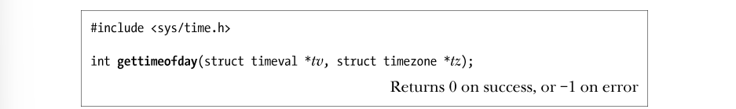</p>
<p>​        参数 tv 是指向如下数据结构的一个指针：</p>
<p></p>
<p>​        虽然 tv_usec 字段能提供微秒级精度，但其返回值的准确性则由依赖于构架的具体实现来决定。tv_usec 中的 u 源于与之形似的希腊字母 μ（读音“mu”），在公制系统中表示百万分之一。在现代 X86-32 系统上，gettimeofday()的确可以提供微秒级的准确度（例如， Pentium 系统内置有时间戳计数寄存器，随每个 CPU 时钟周期而加一）。</p>
<p>​        gettimeofday()的参数 tz 是个历史产物。早期的 UNIX 实现用其来获取系统的时区信息，目前已遭废弃，应始终将其置为 NULL。如果提供了 tz 参数，那么将返回一个 timezone 的结构体，其内容为上次调用 settimeofday()时传入的 tz 参数（已废弃）值。该结构包含两个字段 tz_minuteswest 和 tz_dsttime。tz_minuteswest字段表示欲将本时区时间转换为 UTC 时间所必须增加的分钟数，如为负值，则表示此时区位于 UTC 以东（例如，如为欧洲中部时间，会提前 UTC 一小时，则将此字段设置为−60）。tz_dsttime 字段内为一个常量，意在表示这个时区是否强制施行夏令时（DST）制。正由于夏令时制度无法用一个简单算法加以表达，故而 tz 参数已遭废弃。（Linux 从未支持过此参数。）详情请参考 gettimeofday(2)手册页。time()系统调用返回自 Epoch 以来的秒数（和函数 gettimeofday()所返回的 tv 参数中 tv_sec字段的数值相同）。如果 timep 参数不为 NULL，那么还会将自 Epoch 以来的秒数置于 timep 所指向的位置。由于 time()会以两种方式返回相同的值，而使用时唯一可能出错的地方是赋予 timep 参数一个无效地址（EFAULT），因此往往会简单地采用如下调用（不做错误检查）：</p>
<pre class="line-numbers language-none"><code class="language-none">t &#x3D; time(NULL)<span aria-hidden="true" class="line-numbers-rows"><span></span></span></code></pre>
<pre class="line-numbers language-none"><code class="language-none">之所以存在两个本质上目的相同的系统调用（time()和 gettimeofday()），自有其历史原因。早期的 UNIX 实现提供了 time()。而 4.3BSD 又补充了更为精确的 gettimeofday()系统调用。这时，再将 time()作为系统调用就显得多余，可以将其实现为一个调用 gettimeofday()的库函数。<span aria-hidden="true" class="line-numbers-rows"><span></span></span></code></pre>
<h2 id="10-2-时间转换函数"><a href="#10-2-时间转换函数" class="headerlink" title="10.2 时间转换函数"></a>10.2 时间转换函数</h2><p>图 10-1 所示为用于在 time_t 值和其他时间格式之间相互转换的函数，其中包括打印输图 10-1：获取和使用日历时间的函数出。</p>
<p>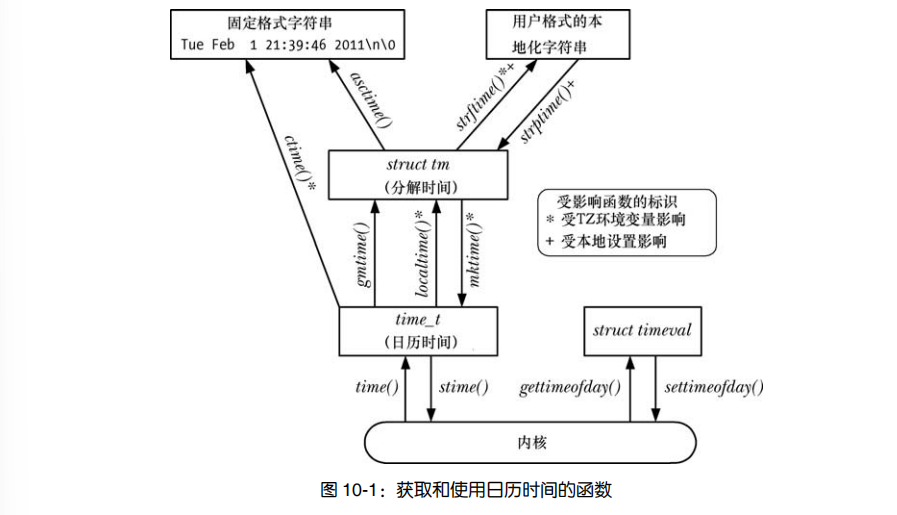</p>
<p>​        这些函数屏蔽了因时区、夏令时（DST）制和本地化等问题给转换所带来的种种复杂性。10.3 节将讨论时区（timezone），10.4 节将讨论地区（locale）。</p>
<h3 id="10-2-1-将-time-t-转换为可打印格式"><a href="#10-2-1-将-time-t-转换为可打印格式" class="headerlink" title="10.2.1 将 time_t 转换为可打印格式"></a>10.2.1 将 time_t 转换为可打印格式</h3><p>​        为了将 time_t 转换为可打印格式，ctime()函数提供了一个简单方法。把一个指向 time_t 的指针作为 timep 参数传入函数 ctime()，将返回一个长达 26 字节的字符串，内含标准格式的日期和时间，如下例所示：</p>
<p></p>
<p>​        该字符串包含换行符和终止空字节各一。 ctime()函数在进行转换时，会自动对本地时区和 DST 设置加以考虑（10.3 节将解释这些设置的确定过程）。返回的字符串经由静态分配，下一次对 ctime()的调用会将其覆盖。SUSv3 规定，调用 ctime()、gmtime()、localTime()或 asctime()中的任一函数，都可能会覆盖由其他函数返回，且经静态分配的数据结构。换言之，这些函数可以共享返回的字符数组和 tm 结构体，某些版本的 glibc 也正是这样实现的。如果有意在对这些函数的多次调用间维护返回的信息，那么必须将其保存在本地副本中。ctime_r()是 ctime()的可重入版本。（21.1.2 节将解释重入。）该函数允许调用者额外指定一个指针参数，所指向的缓冲区（由调用者提供）用于返回时间字符串。本章所论及的其他函数的可重入版，其操作方式与之类似。</p>
<h3 id="10-2-2-time-t-和分解时间之间的转换"><a href="#10-2-2-time-t-和分解时间之间的转换" class="headerlink" title="10.2.2 time_t 和分解时间之间的转换"></a>10.2.2 time_t 和分解时间之间的转换</h3><p>​        函数 gmtime()和 localtime()可将一 time_t 值转换为一个所谓的分解时间（broken-down time)。分解时间被置于一个经由静态分配的结构中，其地址则作为函数结果返回。</p>
<pre class="line-numbers language-C" data-language="C"><code class="language-C">#include &lt;time.h&gt;

struct tm* gmtime(const time_t *timep);
struct tm* localtime(const time_t *timep);C <span aria-hidden="true" class="line-numbers-rows"><span></span><span></span><span></span><span></span></span></code></pre>
<p>​        函数 gmtime()能够把日历时间转换为一个对应于 UTC 的分解时间。（字母 GM 源于格林威治标准时间）。相形之下，函数 localtime()需要考虑时区和夏令时设置，返回对应于系统本地时间的一个分解时间。gmtime_r()和 localtime_r()分别是这些函数的可重入版。在这些函数所返回的 tm 结构中，日期和时间被分解为多个独立字段，其形式如下：</p>
<p>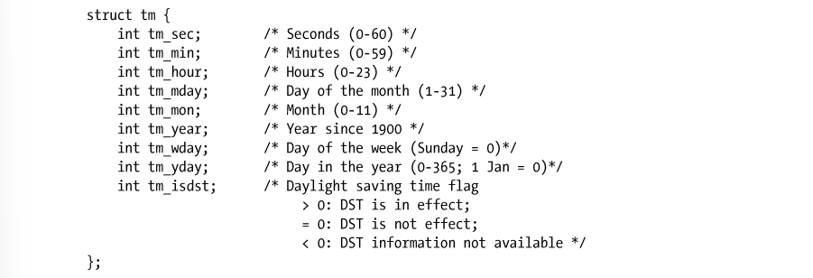</p>
<p>​        将字段 tm_sec 的上限设为 60（而非 59）以考虑闰秒，偶尔会用其将人类日历调整至精确的天文年（所谓的回归年）。</p>
<p>​        如果定义了_BSD_SOURCE 功能测试宏，那么由 glibc 定义的 tm 结构还会包含两个额外字段，以描述关于所示时间的深入信息。第一个字段 long int tm_gmtoff，包含所示时间超出UTC 以东的秒数。第二个字段 const char* tm_zone，是时区名称的缩写（例如，CEST 为欧洲中部夏令时间）。SUSv3 并未定义这些字段，它们只见诸于少数其他 UNIX 实现（主要为 BSD衍生版本）。函数 mktime() 将一个本地时区的分解时间翻译为 time_t 值，并将其作为函数结果返回。调用者将分解时间置于一个 tm 结构，再以 timeptr 指针指向该结构。这一转换会忽略输入 tm结构中的 tm_wday 和 tm_yday 字段。</p>
<p>​        函数 mktime()可能会修改 timeptr 所指向的结构体，至少会确保对 tm_wday 和 tm_yday 字段值的设置，会与其他输入字段的值能对应起来。此外，mktime()不要求 tm 结构体的其他字段受到前述范围的限制。任何一个字段的值超出范围，mktime()都会将其调整回有效范围之内，并适当调整其他字段。所有这些调整，均发生于 mktime()更新 tm_wday 和 tm_yday 字段并计算返回值 time_t 之前。例如，如果输入字段 tm_sec 的值为 123，那么在返回时此字段的值将为 3，且 tm_min 字段值会在其之前值的基础上加 2。（如果这一改动造成 tm_min 溢出，那么将调整 tm_min 的值，并且递增 tm_hour 字段，以此类推。）这些调整甚至适用于字段负值。例如，指定 tm_sec 为−1 即意味着前一分钟的第 59 秒。此功能允许以分解时间来计算日期和时间，故而非常有用。mktime()在进行转换时会对时区进行设置。此外，DST 设置的使用与否取决于输入字段tm_isdst 的值。</p>
<ul>
<li>若 tm_isdst 为 0，则将这一时间视为标准间（即，忽略夏令时，即使实际上每年的这一时刻处于夏令时阶段）。</li>
<li>若 tm_isdst 大于 0，则将这一时间视为夏令时（即，夏令时生效，即使每年的此时不处于夏令时阶段）。</li>
<li>若 tm_isdst 小于 0，则试图判定 DTS 在每年的这一时间是否生效。这往往是众望所归的设置。</li>
</ul>
<p>​        （无论 tm_isdst 的初始设置如何）在转换完成时，如果针对给定的时间，DST 生效，mktime()会将 tm_isdst 字段置为正值，若 DST 未生效，则将 tm_isdst 置为 0。</p>
<h3 id="10-2-3-分解时间和打印格式之间的转换"><a href="#10-2-3-分解时间和打印格式之间的转换" class="headerlink" title="10.2.3 分解时间和打印格式之间的转换"></a>10.2.3 分解时间和打印格式之间的转换</h3><p>​        本节会介绍将分解时间和打印格式相互进行转换的函数。从分解时间转换为打印格式在参数 tm 中提供一个指向分解时间结构的指针，asctime()则会返回一指针，指向经由静态分配的字符串，内含时间，格式则与 ctime ()相同。相形于 ctime()，本地时区设置对 asctime()没有影响，因为其所转换的是一个分解时间，该时间通常要么已然通过 localtime()作了本地化处理，要么早已经由 gmtime()转换成了 UTC。如同 ctime()一样，asctime()也无法控制其所生成字符串的格式。asctime()的可重入版为 asctime_r()。</p>
<p>​        程序清单 10-1 演示 asctime()以及直到本章结尾所述时间转换函数的用法。该程序获取当前的日历时间，随后使用各种时间转换函数并显示其结果。下例为冬季在德国慕尼黑运行此程序的结果，该地区处于欧洲中部时间这一时区，比 UTC 要早一小时。</p>
<p>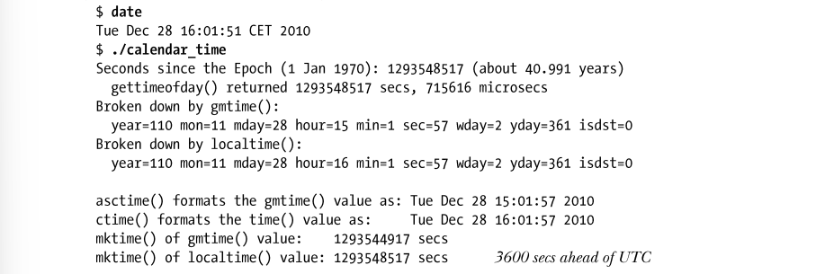</p>
<p>​        程序清单 10-1：获取和转换日历时间 </p>
<p>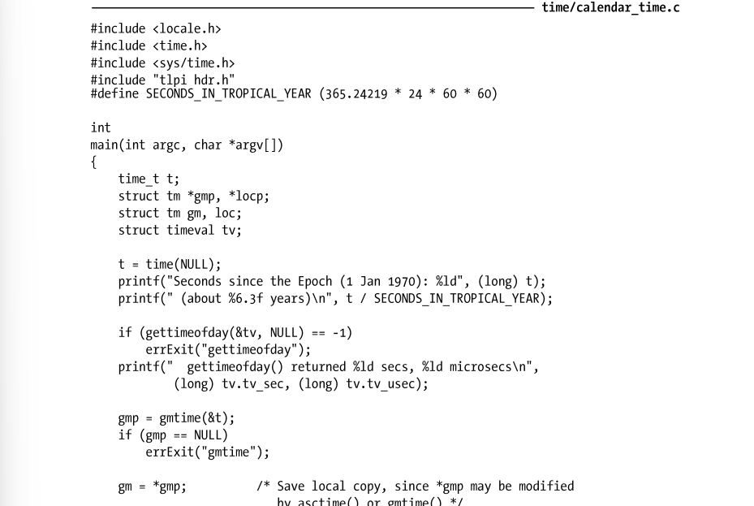</p>
<p>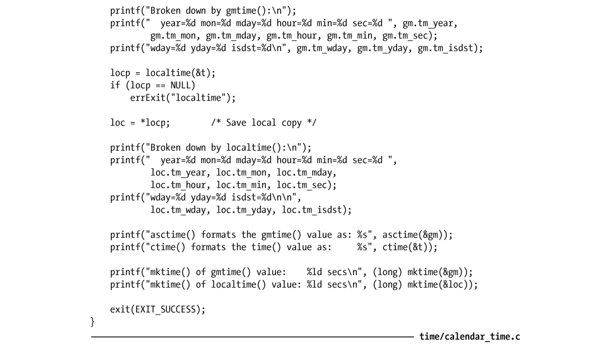</p>
<p>​        当把一个分解时间转换成打印格式时，函数 strftime()可以提供更为精确的控制。令 timeptr指向分解时间，strftime()会将以 null 结尾、由日期和时间组成的相应字符串置于 outstr 所指向的缓冲区中。</p>
<p>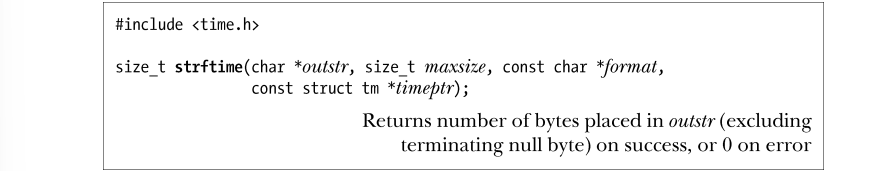</p>
<p>​        outstr 中返回的字符串按照 format 参数定义的格式做了格式化。Maxsize 参数指定 outstr 的最大长度。不同于 ctime()和 asctime()，strftime()不会在字符串的结尾包括换行符（除非 format 中定义有换行符）。如果成功，strftime()返回 outstr 所指缓冲区的字节长度，且不包括终止空字节。如果结果字符串的总长度，含终止空字节，超过了 maxsize 参数，那么 strftime()会返回 0 以示出错，且此时无法确定 outstr 的内容。strftime()的 format 参数是一字符串，与赋予 printf()的参数相类似。冠以百分号（%）的字符序列是对转换的定义，函数会将百分号后的说明符字符一一替换为日期和时间的组成部分。这是一套相当丰富的转换说明符，表 10-1 中所列的是其一个子集。（完整的列表可见诸于strftime(3)手册页。）除非特别注明，所有这些转换说明符都符合 SUSv3 标准。%U 和%W 说明符都生成一年中的周数。%U 的周数按以下方法计算。含有星期日的第一周编号为 1，此周的前一周编号为 0。如果星期天恰巧是当年的第一天，那么就没有第 0 周，当年的最后一天则属于第 53 周。%W 的周数编号以同样的方式来计算，只不过计算对象是周一而非周日。通常情况下，我们希望在本书的各种示范程序中显示当前时间。为此，本书提供了函数currTime()，其返回一字符串，内含 strftime()按 format 参数格式化的当前时间。</p>
<p>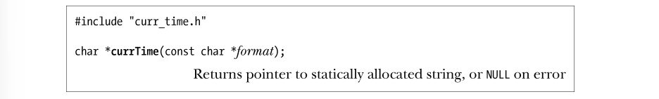</p>
<p>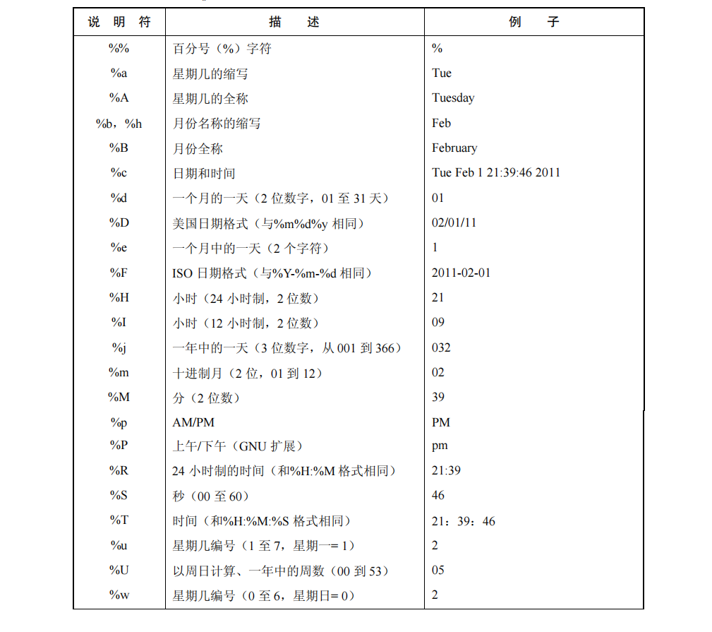</p>
<p>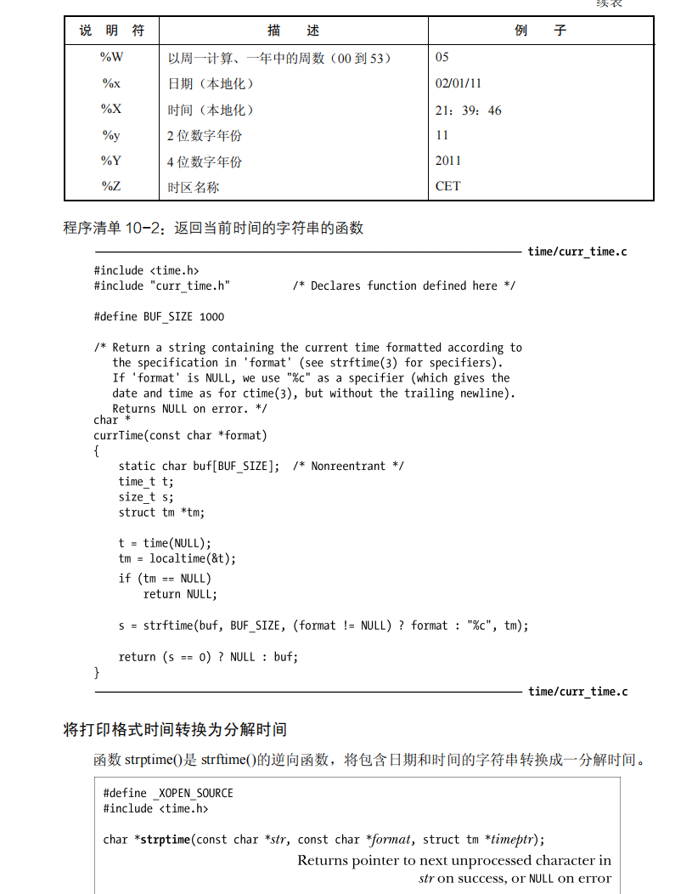</p>
<p>​        函数strptime()按照参数format内的格式要求，对由日期和时间组成的字符串str加以解析，并将转换后的分解时间置于指针 timeptr 所指向的结构体中。如果成功，strptime()返回一指针，指向 str 中下一个未经处理的字符。（如果字符串中还包含有需要应用程序处理的额外信息，这一特性就能派上用场。）如果无法匹配整个格式字符串，strptime()返回 NULL，以示出现错误。strptime()的格式规范类似于 scanf(3)，包含以下类型的字符。</p>
<ul>
<li>转换字符串冠以一个百分号（%）字符。</li>
<li>如包含空格字符，则意味着其可匹配零个或多个空格。</li>
<li>（%之外的）非空格字符必须和输入字符串中的相同字符严格匹配。</li>
</ul>
<p>​        转换说明类似于之前为 strftime()给出的内容（表 10-1）。主要的区别在于，此处的说明符更为通用。例如，不拘于星期名称的全称或简称，%a 和%A 都可接受，而且%d 和%e 均可用于读取月中的个位天数，无论该数字前面是否有 0。此外，不区分大小写，例如，May 和 MAY是相同的月份名称。使用字符串%%来匹配输入字符串中的百分号字符。 strptime(3)手册页提供有更多的细节。glibc 在实现 strptime()时，并不修改 tm 结构体中那些未获 format 说明符初始化的字段。这也意味着可以根据多个字符串，例如，一个日期字符串和一个时间字符串，发起多次 strptime()调用，来创建一个 tm 结构体。SUSv3 虽然允许这一行为，但并不强制要求实现，因此在其他UNIX 实现上不能对其有所依赖。要保证应用的可移植性，就必须确保，要么 str 和 format 中所含输入信息足以设置最终 tm 结构的所有字段，要么在调用 strptime()之前对 tm 结构体已经做了适当的初始化处理。在大多数情况下，用 memset()把整个结构体置为 0 也就足够了，但要留心，在 glibc 和许多其他时间转换函数的实现中，m_mday 字段值为 0，意为上月的最后一天。最后还要注意，strptime()从不设置 tm 结构体的 tm_isdst 字段。\</p>
<pre class="line-numbers language-none"><code class="language-none">GNU C 库还提供有与 strptime()功能类似的两个函数：getdate()（已由 SUSv3 规范，且应用广泛）及其可重入版 getdate_r()（SUSv3 中未定义，仅获少数 UNIX 实现支持）。此处将不会介绍这些函数，因为在指定用于扫描日期的格式时，它们所采用的是外部文件（由环境变量 DATEMSK 定义），这不但令其难以使用，而且会在 set-user-ID 程序中造成安全漏洞。<span aria-hidden="true" class="line-numbers-rows"><span></span></span></code></pre>
<p>​        程序清单 10-3 演示了 strptime()和 strftime()的用法。该程序从命令行参数中接受日期和时间，然后用 strptime()将其转换为一分解时间，接着使用 strftime()执行逆向转换并显示结果。该程序接收至多 3 个参数，其中前两个为必需提供。第一个参数是包含日期和时间的字符串。第二个参数指定了 strptime()在解析第一个参数时所采用的格式。可选的第三个参数是格式字符串，用于 strftime()的逆向转换。如果省略此参数，将使用一个默认的格式字符串。（本程序中使用的 setLocale()函数将在 10.4 节中加以介绍。）以下 shell 会话日志显示了使用该程序的一些例子：以下用法与之相似，只不过这次为 strftime()明确指定了格式：</p>
<h2 id="10-3-时区"><a href="#10-3-时区" class="headerlink" title="10.3 时区"></a>10.3 时区</h2><p>​        不同的国家（有时甚至是同一国家内的不同地区）使用不同的时区和夏时制。对于要输入和输出时间的程序来说，必须对系统所处的时区和夏时制加以考虑。所幸的是，所有这些细节都已经由 C 语言函数库包办了。</p>
<h3 id="时区定义"><a href="#时区定义" class="headerlink" title="时区定义"></a>时区定义</h3><p>​        时区信息往往是既浩繁又多变的。出于这一原因，系统没有将其直接编码于程序或函数库中，而是以标准格式保存于文件中，并加以维护。这些文件位于目录/usr/share/zoneinfo 中。该目录下的每个文件都包含了一个特定国家或地区内时区制度的相关信息，且往往根据其所描述的时区来加以命名，诸如 EST（美国东部标准时间）、CET（欧洲中部时间）、UTC、Turkey 和 Iran。此外，可以利用子目录对相关时区进行有层次的分组。例如，Pacific 目录就可能包含文件 Auckland、Port_Moresby 和 Galapagos。在程序中指定使用的时区，实际上是指定该目录下某一时区文件的相对路径名。系统的本地时间由时区文件/etc/localtime 定义，通常链接到/usr/share/zoneinfo 下的一个文件。时区文件的格式记述于 tzfile(5)手册页，其创建可通过 zic(8)（时区信息编译器，zoone information compiler）工具来完成。zdump(8)命令可根据指定时区文件中的时区来显示当前时间。为程序指定时区为运行中的程序指定一个时区，需要将 TZ 环境变量设置为由一冒号(:)和时区名称组成的字符串，其中时区名称定义于/usr/share/zoneinfo 中。设置时区会自动影响到函数 ctime()、localtime()、mktime()和 strftime()。为了获取当前的时区设置，上述函数都会调用 tzset(3)，对如下 3 个全局变量进行了初始化：</p>
<p></p>
<p>​        函数 tzset()会首先检查环境变量 TZ。如果尚未设置该变量，那么就采用<code>/etc/localtime</code> 中定义的默认时区来初始化时区。如果 TZ 环境变量的值为空，或无法与时区文件名相匹配，那么就使用 UTC。还可将 TZDIR 环境变量（非标准的 GNU 扩展）设置为搜寻时区信息的目录名称，以替代默认的/usr/share/zoneinfo 目录。可以通过运行程序清单 10-4 中的程序来观察 TZ 变量的影响力。第一次运行输出的是相应系统的默认时区（欧洲中部时间，CET）。在第二次运行时，由于指定的时区为 New Zealand，其在每年此时已进入夏令时，时区要比 CET 提前 12 个小时。</p>
<p>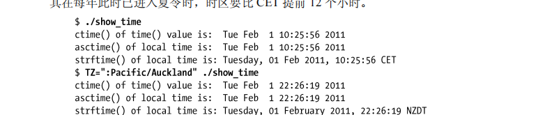</p>
<p>​        程序清单 10-4：演示时区和地区的效果 </p>
<p>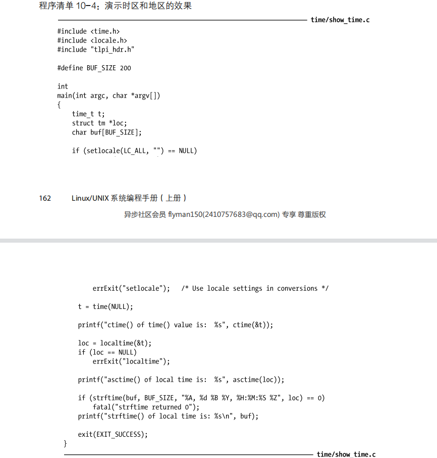</p>
<p>​        SUSv3 为设置 TZ 环境变量定义了两个通用方法。如前所述，可将 TZ 设置为由冒号外加字符串组成的字符序列，其中的字符串用以标识时区，并随系统实现的不同而不同，通常为时区描述文件的路径名。（在采用这种形式时，Linux 和其他一些 UNIX 实现允许将冒号省略，但 SUSv3 并未规范这一行为。为了保证代码的可移植性，应当始终包含冒号。）设置 TZ 的另一种方法在 SUSv3 中有完整的定义。使用此方法，可以将如下形式的字符串赋给 TZ：</p>
<p></p>
<p>​        为了便于阅读，在上面这行字符串中加入了空格，但实际上任何空格都不应出现在 TZ 中。方括号（[]）用来表示可选项。std 和 dst 部分是用以标识标准和 DST 时区名称的字符串。例如，CET 和 CEST 分别为欧洲中部时间和欧洲中部夏令时间。各种情况下的 offset 分别表示欲转换为 UTC，需要叠加在本地时间上的正、负调整值。最后四部分则提供了一个规则，描述何时从标准时间变更为夏令时。可以多种格式指定 date，其中之一是 Mm.n.d，意即：m(1～12)月中，第 n（1～5，每月的最后 d 天总为第 5 周）周，星期 d（0=星期一，6=星期天）。如果省略 time，则无论何种情况下均默认为 02:00:00（上午 2 点）。以下将 TZ 定义为 Central Europe ，该时区的标准时间比 UTC 提前 1 小时，且 DST 始于3 月的最后一个星期日，直至 10 月的最后一个星期日结束，提前 UTC 2 小时。</p>
<p></p>
<p>​        此处省略了对 DST 转换时间的指定，因为默认其发生于 02:00:00。显然，较之于如下的Linux 专有格式，上述形式的确缺乏可读性：</p>
<p></p>
<h2 id="10-4-地区（Locale）"><a href="#10-4-地区（Locale）" class="headerlink" title="10.4 地区（Locale）"></a>10.4 地区（Locale）</h2><p>​        世界各地在使用数千种语言，其中在计算机系统上经常使用的占了相当比例。此外，在显示诸如数字、货币金额、日期和时间之类的信息时，不同国家的习俗也不同。例如，大多数欧洲国家使用逗号，而非小数点来分隔实数的整数和小数部分，大多数国家日期的书写格式也与美国所采用的 MM/DD/ YY 格式并不相同。SUSv3 对 locale 的定义为：用户环境中依赖于语言和文化习俗的一个子集。理想情况下，意欲在多个地理区位运行的任何程序都应处理地区（locales）概念，以期以用户的语言和格式来显示和输入信息。这也构成了一个相当复杂的课题——国际化（internationalization)。在理想情况下，程序只要一次经编写，则不论运行于何处，总会自动以正确方式来执行 I/O 操作，也就是说，完成本地化（localization)任务。尽管存在各种支持工具，程序国际化工作依然耗时不菲。诸如 glibc 之类的程序库也提供有工具，来帮助程序支持国际化。经常将术语 internationalization 写为 I18N，意即：I 加上 18 个字母再加 N。这一形式既便于快速书写，又避免了单词本身在英语和美语间拼写方式不同的问题。</p>
<h3 id="地区定义"><a href="#地区定义" class="headerlink" title="地区定义"></a>地区定义</h3><p>​        和时区信息一样，地区信息同样是既浩繁且多变的。出于这一原因，与其要求各个程序和函数库来存储地区信息，还不如由系统按标准格式将地区信息存储于文件中，并加以维护。地区信息维护于/usr/share/local（在一些发行版本中为/usr/lib/local）之下的目录层次结构中。该目录下的每个子目录都包含一特定地区的信息。这些目录的命名约定如下：language 是双字母的 ISO 语言代码。territory 是双字母的 ISO 国家代码。codeset 表示字符编码集。modifier 则提供了一种方法，用以区分多个地区目录下 language、territory 和 codeset均相同的状况。de_DE.utf-8@euro 是完整地区目录名称的例子之一，代表地区如下：德语，德国，UTF - 8 字符编码，并采用欧元作为货币单位。正如命名格式中的方括号所示，可以将地区目录名称中的相应部分省略。通常情况下，命名只包括语言和国家。因此，en_US 是（说英语的）美国的地区目录，而 fr_CH 则是瑞士法语区的地区目录。这里 CH 代表 Confoederatio Helvetica，在拉丁语（本地中性语言，locally language-neutra)中意即“瑞士”。由于有 4 门官方语言，瑞士在地区上类似于跨多个时区的国家。当在程序中指定要使用的地区时，实际上是指定了/usr /share/locale 下某个子目录的名称。如果程序指定地区不与任何子目录名称相匹配，那么 C 语言函数库将按如下顺序将各部分从指定地区（locale）中剥离，以寻求匹配：</p>
<p>1.codeset </p>
<p>2.normalized codeset </p>
<p>3.territory </p>
<p>4.modifier </p>
<p>​        标准化字符编码集（normalized codeset）是一个特定版本字符编码集的名称，剔除了所有非字母、非数字的字符，且将所有字母转换为小写，最终字符串前冠以 ISO 三个字符。标准化的目的，在于排除字符集名称中因大小写和标点符号（例如，额外的连字符）而发生的变化。这里是剥离过程的一个例子，假设为一程序指定的地区为 fr_CH.utf- 8，但并不存在以该名称命名的地区目录，那么如果 fr_CH 目录存在，则与之匹配。如果 fr_CH 目录也不存在，那么将采用 fr 地区目录。万一 fr 目录也不存在，那么简而言之，setLocale()函数将会报错。/user/share/locale/locale.alias 文件定义了为程序设定地区的替代方法。详见locale.aliases(5)手册页。每个地区子目录中包括有标准的一套文件，指定了此地区的约定设置，如表 10-2 所示。关于本表中的信息，还要注意以下几点。</p>
<ul>
<li>文件 LC_COLLATE 定义了一套规则，描述了如何在一字符集内对字符排序（例如alphabetical“按字母顺序排列的”字符集顺序）。这些规则将决定函数 strcoll(3)和strxfrm(3)的动作。即便是同属拉丁语系的语言，其遵循的排序规则也不相同。例如，一些欧洲语言有额外字母，在某些情况下排在字母 Z 之后。另外还有特殊情况，西班牙语的双字母序列 ll，排序时位于字母 l 之后。又比如德语的元音变音字符 ä，对应于ae，并与该双字母排在相同位置。</li>
<li>目录 LC_MESSAGES 是程序显示信息迈向国际化的步骤之一。要实现更为全面的程序信息国际化，可以采用消息目录（参考 catopen(3)和 catgets(3)手册页）或是 GNU 的gettext API（参见 <a target="_blank" rel="noopener" href="http://www.gnu.org/）。">http://www.gnu.org/）。</a></li>
</ul>
<pre class="line-numbers language-none"><code class="language-none">Glibc 的 2.2.2 版引入了一系列非标准的地区新类别。LC_ADDRESS 定义了特定于地区的邮政地址表示规则。LC_IDENTIFICATION 指定了识别地区的信息。LC_MEASUREMENT定义了地区的度量系统（例如，公制&#x2F;英制）。LC_NAME 定义了特定于地区的人名及头衔表示规则。LC_PAPER 定义了该地区的标准纸张尺寸（例如，美国信纸&#x2F;其他大多数国家所使用的 A4 纸）。LC_TELEPHONE 则定义了特定于地区的国内及国际电话号码表示规则，以及国际长途国家代码和国际拨号前缀。<span aria-hidden="true" class="line-numbers-rows"><span></span></span></code></pre>
<p>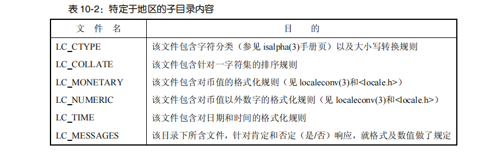</p>
<p>​        系统中实际定义的地区可能会各有不同。除了必须定义一个名为 POSIX（与 C 同义，后者的存在是由于历史原因）的标准地区外，SUSv3 没有对此作出任何要求。POSIX 折射出 UNIX系统的历史渊源。因之，系统建立于 ASCII 字符集之上，使用英文来描述日期，并以“yes/no”来响应。该地区的货币和数字格式则处于未定义状态。</p>
<p>​        locale 命令显示当前地区环境（本 shell 内）的相关信息。命令 locale – a 则将列出系统上定义的整套地区。</p>
<h4 id="为程序设置地区"><a href="#为程序设置地区" class="headerlink" title="为程序设置地区"></a>为程序设置地区</h4><p>​        函数 setlocale()既可设置也可查询程序的当前地区。</p>
<p></p>
<p>​        category 参数选择设置或查询地区的哪一部分，它仅能使用表 10-2 中列出的地区类别的常量名称。因此，它可以设置地区的时间显示格式是德国，而地区的货币符号是美元。或者，更常见的是，我们可以利用 LC_ALL 来指定我们要设置的地区的所有部分的值。使用 setLocale()设置地区有两种不同的方法。locale 参数可能是一个字符串，指定系统上已定义的一个地区（例如，/usr /lib /locale 中的子目录的名称），如 de_DE 或 en_US。另外，地区可能被指定为空字符串，这意味着从环境变量取得地区的设置。我们必须这样调用才能使程序使用环境变量中的地区。如果调用被省略，这些环境变量将不会对程序生效。当运行程序调用了 setLocale(LC_ALL，” “)，我们能够使用一系列环境变量来控制地区的各部分内容，环境变量的名称也是对应于表 10-2 中列出的类型：LC_CTYPE、LC_COLLATE、LC_MONETARY、LC_NUMERIC、LC_TIME、LC_MESSAGES。另外，我们可以使用 LC_ALL或 LANG 环境变量指定整个地区的设置。如果设置了多个先前的环境变量，那么 LC_ALL会覆盖所有其他的 LC_ *环境变量，同时 LANG 的优先级最低。因此，通常使用 LANG 为地区所有内容设置默认值，然后用单独的 LC_*变量，设置地区的各个方面内容来覆盖默认值。</p>
<p>​        最后，setLocale()返回一个指针指向标识这一类地区设置的字符串（通常是静态分配的）。如果我们仅需要查看地区的设置而不需要改变它，那么我们可以指定 locale 参数为NULL。</p>
<p>​        地区设置影响众多 GNU/ Linux 实用程序，以及 glibc 的许多函数的功能。其中有函数strftime()和 strptime()（10.2.3 节），当我们在不同的地区运行程序清单 10-4，strftime 返回的结果如下：</p>
<p></p>
<p>​        下一个运行演示 LC_TIME 比 LANG 的优先级高：</p>
<p></p>
<p>而这个运行结果表明，LC_ALL 超过 LC_TIME 的优先级：</p>
<p></p>
<h2 id="10-5-更新系统时钟"><a href="#10-5-更新系统时钟" class="headerlink" title="10.5 更新系统时钟"></a>10.5 更新系统时钟</h2><p>​        我们现在来看两个更新系统时钟的接口：settimeofday()和 adjtime()。这些接口都很少被应用程序使用，因为系统时间通常是由工具软件维护，如网络时间协议（Network Time Protocol）守护进程，并且它们需要调用者已被授权（CAP_SYS_TIME）。系统调用 settimeofday()是 gettimeofday()的逆向操作（这是我们在 10.1 节中描述的）。它将 tv 指向 timeval 结构体里的秒数和微秒数，设置到系统的日历时间。</p>
<p>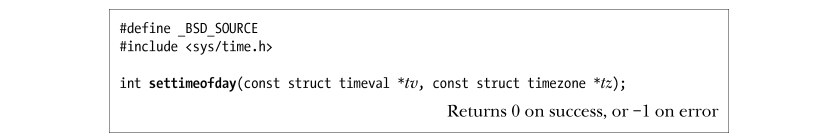</p>
<p>​        和函数 gettimeofday()一样，tz 参数已被废弃，这个参数应该始终指定为 NULL。tv.tv_usec 字段的微秒精度并不意味着我们以微秒精度来设置系统时钟，因为时钟的精度可能会低于微秒。虽然 SUSv3 没有定义 settimeofday()，但它在其他 UNIX 实现中被广泛使用。Linux 还提供了 stime()系统调用来设置系统时钟。settimeofday()和 stime()之间的区别是，后者调用允许使用秒的精度来表示新的日历时间。和函数 time()与 gettimeofday()相同，stime()和 settimeofday()的并存是由历史原因造成的：拥有更高精确度的后一个函数，是由4.3BSD 添加的。</p>
<p>​        settimeofday()调用所造成的那种系统时间的突然变化，可能会对依赖于系统时钟单调递增的应用造成有害的影响（例如，make(1)，数据库系统使用的时间戳或包含时间戳记的日志文件）。出于这个原因，当对时间做微小调整时（几秒钟误差），通常是推荐使用库函数 adjtime()，它将系统时钟逐步调整到正确的时间。</p>
<p></p>
<p>​        delta 参数指向一个 timeval 结构体，指定需要改变时间的秒和微秒数。如果这个值是正数，那么每秒系统时间都会额外拨快一点点，直到增加完所需的时间。如果 delta 值为负时，时钟以类似的方式减慢。Linux/x86-32 以每 2000 秒变化 1 秒（或每天 43.2 秒）的频率调整时钟。在 adjtime()函数执行的时间里，它可能无法完成时钟调整。在这种情况下，剩余未经调整的时间存放在 olddelta 指向的 timeval 结构体内。如果我们不关心这个值，我们可以指定olddelta 为 NULL。相反，如果我们只关心当前未完成时间校正的信息，而并不想改变它，我们可以指定 delta 参数为 NULL。虽然 SUSv3 未定义 adjtime()，可大多数 UNIX 实现提供了这个函数。adjtime()在 Linux 上，基于更通用和复杂的特定于 Linux 的系统调用 adjtimex()来完成功能。这个系统调用也同时被网络时间协议（NTP）守护进程调用。如需进一步信息，请参阅 Linux 的源代码，Linux adjtimex(2)帮助手册页和 NTP 规范（[Mills，1992]）。</p>
<h2 id="10-6-软件时钟（jiffies）"><a href="#10-6-软件时钟（jiffies）" class="headerlink" title="10.6 软件时钟（jiffies）"></a>10.6 软件时钟（jiffies）</h2><p>​        在本书中所描述的时间相关的各种系统调用的精度是受限于系统软件时钟（software clock)的分辨率，它的度量单位被称为 jiffies。jiffies 的大小是定义在内核源代码的常量 HZ。这是内核按照 round-robin 的分时调度算法（35.1 节）分配 CPU 进程的单位。在 2.4 或以上版本的 Linux/x86-32 内核中，软件时钟速度是 100 赫兹，也就是说，一个 jiffy是 10 毫秒。自 Linux 面世以来，由于 CPU 的速度已大大增加，Linux / x86- 32 2.6.0 内核的软件时钟速度已经提高到 1000 赫兹。更高的软件时钟速率意味着定时器可以有更高的操作精度和时间可以拥有更高的测量精度。然而，这并非可以任意提高时钟频率，因为每个时钟中断会消耗少量的 CPU 时间，这部分时间 CPU 无法执行任何操作。经过内核开发人员之间的的讨论，最终导致软件时钟频率成为一个可配置的内核的选项（包括处理器类型和特性，定时器的频率）。自 2.6.13 内核，时钟频率可以设置到 100、250（默认）或 1000 赫兹，对应的 jiffy 值分别为 10、4、1 毫秒。自内核 2.6.20，增加了一个频率：300 赫兹，它可以被两种常见的视频帧速率 25 帧每秒（PAL）和 30 帧每秒（NTSC）整除。</p>
<h2 id="10-7-进程时间"><a href="#10-7-进程时间" class="headerlink" title="10.7 进程时间"></a>10.7 进程时间</h2><p>进程时间是进程创建后使用的 CPU 时间数量。出于记录的目的，内核把 CPU 时间分成以下两部分。</p>
<ul>
<li>用户 CPU 时间是在用户模式下执行所花费的时间数量。有时也称为虚拟时间（virtual time），这对于程序来说，是它已经得到 CPU 的时间。</li>
<li>系统 CPU 时间是在内核模式中执行所花费的时间数量。这是内核用于执行系统调用或代表程序执行的其他任务（例如，服务页错误）的时间。</li>
</ul>
<p>​        有时候，进程时间是指处理过程中所消耗的总 CPU 时间。当我们运行一个 shell 程序，我们可以使用的 time(1)命令，同时获得这两个部分的时间值，以及运行程序所需的实际时间。</p>
<p></p>
<p>​        系统调用 times()，检索进程时间信息，并把结果通过 buf 指向的结构体返回。</p>
<p>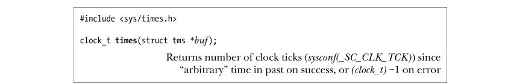</p>
<p>​        buf 指向的 TMS 结构体有下列格式：</p>
<p></p>
<p>​        tms 结构体的前两个字段返回调用进程到目前为止使用的用户和系统组件的 CPU 时间。最后两个字段返回的信息是：父进程（比如，times()的调用者）执行了系统调用 wait()的所有已经终止的子进程使用的 CPU 时间。数据类型 clock_t 是用时钟计时单元（clock tick）为单位度量时间的整型值，习惯用于计算 tms 结构体的 4 个字段。我们可以调用 sysconf(_SC_CLK_TCK)来获得每秒包含的时钟计时单元数，然后用这个数字除以 clock_t 转换为秒。（我们在 11.2 节叙述 sysconf()。）在大多数 Linux 的硬件架构，sysconf(_SC_CLK_TCK)返回 100。与此对应的内核常量是 USER_HZ。然而 USER_HZ 在其他几个架构下可以被定义超过 100，如 Alpha 和 IA - 64。如果成功，times()返回自过去的任意点流逝的以时钟计时单元为单位的（真实的）时间。SUSv3特别未定义这点是什么，只是说，这将是在调用进程的生命周期内的一个固定点。因此，这个返回值唯一的用法是通过计算一对 times()调用返回的值的差，来计算进程执行消耗的时间。然而，即使是这种用法，times()的返回值仍然不可靠的，因为它可能会溢出clock_t的有效范围，这时times()的返回值将再次从 0 开始计算（也就是说，一个稍后的 times()的调用返回的数值可能会低于一个更早的 times()调用）。可靠的测量经过时间的方法是使用函数 gettimeofday()（10.1 节所述）。在 Linux 上，我们可以指定 buf 参数为 NULL。在这种情况下，times()只是简单地返回一个函数结果。然而，这是没有意义的。 SUSv3 并未定义 buf 可以使用 NULL，因此许多其他UNIX 实现需要这个参数必须为一个非 NULL 值。函数 clock()提供了一个简单的接口用于取得进程时间。它返回一个值描述了调用进程使用的总的 CPU 时间（包括用户和系统）。</p>
<p>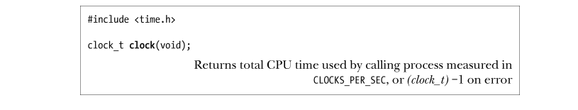</p>
<p>​        time()的返回值的计量单位是 CLOCKS_PER_SEC，所以我们必须除以这个值来获得进程所使用的 CPU 时间秒数。在 POSIX.1，CLOCKS_PER_SEC 是常量 10000，无论底层软件时钟（10.6 节）的分辨率是多少。clock()的精度最终仍然受限于软件时钟的分辨率。虽然 clock()和 times()返回相同的数据类型 clock_t，这两个接口使用的测量单位却并不相同。这是历史原因造成了 clock_t 定义的冲突，一个是 POSIX.1 标准，而另一个是 C 编程语言标准。即使 CLOCKS_PER_SEC 是常量 10000，SUSv3 注明，这个常量在不兼容 XSI（non-XSI￾conformant)的系统上可以为整型变量，所以，我们不能简单地把它作为一个编译时常量（即，我们不能够使用＃ifdef 预处理表达式）。它可能会被定义为一个长整数（即 1000000L），我们总是将这个常量转换为 long，因此我们可以简单地用 printf() 把它打印输出（见 3.6.2 节）。SUSv3 描述 clock()应该返回“进程所使用的处理器时间”时有不同的解释。在一些 UNIX的实现中，clock()返回的时间包含所有等待子进程使用的 CPU 时间。而在 Linux 上，它不包括。</p>
<h4 id="示例程序"><a href="#示例程序" class="headerlink" title="示例程序"></a>示例程序</h4><p>​        在程序清单 10-5 中的程序演示了如何使用本节中描述的功能。函数 displayProcessTimes()首先打印由调用者提供的信息，然后使用 clock()和 times()来获得和显示进程时间。主程序首先调用函数 displayProcessTimes()，然后执行一个循环，通过重复调用 getppid()消耗一些 CPU时间，再次调用 displayProcessTimes()来查看这个循环会消耗多少 CPU 时间。当我们使用这个程序调用 getppid()十万次，这就是我们看到的：程序清单 10-5：获取进程 CPU 时间 </p>
<h2 id="10-8-总结"><a href="#10-8-总结" class="headerlink" title="10.8 总结"></a>10.8 总结</h2><p>​        真实时间对应于时间定义的每一天。当真实时间通过一些标准点计算的时候，我们称它为日历时间。和经过的时间相对，它是度量一个进程生命周期中的一些点（通常是开始）。进程时间是由一个进程使用的 CPU 时间量，并划分为用户时间和系统时间。多种系统调用允许我们获取和设置系统时钟值（即日历时间，以秒为单位从 Epoch 计算），以及一系列的库函数能够完成从日历时间到其他时间格式之间的转换，包括分解时间和具有可读性字符串。描述这种转换把我们引入了地区和国际化的讨论。使用和显示时间和日期是许多应用程序的一个重要组成部分，我们会在这本书后面的章节中经常使用到本节描述的功能。我们也会在第 23 章更多地介绍时间的度量。</p>
<h1 id="系统限制和选项"><a href="#系统限制和选项" class="headerlink" title="系统限制和选项"></a>系统限制和选项</h1><p>​        但凡 UNIX 实现，无不对各种系统特性和资源加以限制，并提供（或者选择不提供）由各种标准所定义的选项，例如：</p>
<ul>
<li>一个进程能同时拥有多少已打开的文件？</li>
<li>系统是否支持实时信号？</li>
<li>int 类型变量可存储的最大值是多少？</li>
<li>一个程序的参数列表能有多大？</li>
<li>路径名的最大长度是多少？</li>
</ul>
<p>​        尽管可以把假定的限制和选项硬性写入程序编码，但这将破坏程序的可移植性，因为限制和选项可能会有所不同。</p>
<ul>
<li>在 UNIX 实现之间：虽然限制和选项在某个特定 UNIX 实现中可能是固定的，但在不同的 UNIX 实现之间，可能会有所不同。int 变量可存储的最大值就是此类限制的例子之一。</li>
<li>特定实现的运行环境：例如，可能重新配置了内核，改变了某个限制。又或者，在某个系统上编译的应用程序，却在另一个限制和选项有所不同的系统中运行。</li>
<li>从一个文件系统到另外一个文件系统：例如，传统的 System V 文件系统允许文件名长达 14 个字节，而传统的 BSD 文件系统和大多数“原生”Linux 文件系统则允许文件名高达 255 个字节。</li>
</ul>
<p>​        因为系统限制和选项会影响应用程序的行为，所以可移植应用程序需要获取限制值，弄清系统对选项的支持情况。C 语言标准和 SUSv3 为此而提供了两种重要途径。y 在编译程序时能够获得一些限制和选项。例如，int 类型的最大值取决于硬件结构和编译器的设计选择。此类限制可在头文件中记录。y 另外一些限制和选项在程序运行时可能会有变化。对此，SUSv3 定义了 3 个函数sysconf()、pathconf()和 fpathconf()，供应用程序调用以检查系统实现的限制和选项。SUSv3 规定有一系列限制，要求符合规范的实现必须支持，同时还规定了一套选项，特定系统可以有选择地对其中各个选项予以支持。本章介绍了部分限制和选项，其余则会在后续章节中适时加以描述。</p>
<h2 id="11-1-系统限制"><a href="#11-1-系统限制" class="headerlink" title="11.1 系统限制"></a>11.1 系统限制</h2><p>​        SUSv3 要求，针对其所规范的每个限制，所有实现都必须支持一个最小值。在大多数情况下，会将这些最小值定义为<limits.h>文件中的常量，其命名则冠以字符串_POSIX_，而且（通常）还包含字符串_MAX，因此，常量命名形如_POSIX_XXX_MAX。</p>
<p>​        如果应用程序将本身限制在 SUSv3 对每个限制所要求的最小值之内，那么该程序对符合标准的所有实现都具有可移植性。然而，这一做法阻碍了应用程序去利用特定实现可提供的更高限制。因此，在特定系统上获取限制，通常更为可取的方法是使用<limits.h>文件、sysconf()或 pathconf()。</p>
<p>​        SUSv3 将其所定义的各类限制描述为最小值，但命名却使用了字符串_MAX，这可能颇令人疑惑。换一种思路，将此类常量中的每一个都视为对某类资源或特性的上限，且标准要求这些上限都必须拥有一个确定的最小值，这种命名的用意也就不言自明了。在某些情况下，会为某个限制提供最大值，并且在对这些值的命名中包含字符串_MIN。对于这些常量，道理正好反过来；它们代表了对某些资源的下限，按照标准规定，在符合标准的实现中，该下限不能高于某个值。例如，限制 FLT_MIN(1E-37)为某个实现中所能表征的最小浮点数定义了最大值。所有满足标准的实现至少能够表征如此之小的浮点数。</p>
<p>​        每个限制都有一个名称，与上述最小值的名称相对应，但缺少了_POSIX_前缀。某个实现可以在<limits.h>文件中以该名称定义一个常量，用以表示该实现的相应限制。若已然定义，则该限制值总是至少等同于前述最大值（即 XXX_MAX &gt;= _POSIX_XXX_MAX）。SUSv3 将其规定的限制归为 3 类：运行时恒定值、路径名变量值和运行时可增加值。在下列段落中将描述这些类别并提供一些例子. </p>
<h4 id="运行时恒定值（可能不确定）"><a href="#运行时恒定值（可能不确定）" class="headerlink" title="运行时恒定值（可能不确定）"></a>运行时恒定值（可能不确定）</h4><p>​        所谓运行时恒定值是指某一限制，若已然在<limits.h>文件中定义，则对于实现而言固定不变。然而该值可能是不确定的（因为该值可能依赖于可用的内存空间），因而在<limits.h>文件中会忽略对其定义。在这种情况下（即使在<limits.h>文件中已然定义了该限制），应用程序可以使用 sysconf()来获取运行时的值。</p>
<p>​        MQ_PRIO_MAX 限制就是运行时恒定值的例子之一。正如 52.5.1 节所述，针对 POSIX 消息队列中的消息，存在着优先级方面的限制。SUSv3 定义了值为 32 的常量_POSIX_MQ_ PRIO_MAX，将其作为符合规范的实现为该限制所必须提供的最小值。这意味着，所有符合规范的实现，其对消息优先级的支持至少应为从 0～31。一个 UNIX 实现可以为此限制设定更高值，并将该值在<limits.h>文件中以常量 MQ_PRIO_MAX 加以定义。例如，Linux 就将MQ_PRIO_MAX 的值定义为 32768。也可以通过下列调用在运行时获取该值：</p>
<p></p>
<h4 id="路径名变量值"><a href="#路径名变量值" class="headerlink" title="路径名变量值"></a>路径名变量值</h4><p>​        所谓路径名变量值是指与路径名（文件、目录、终端等）相关的限制，每个限制可能是相对于某个系统实现的常量，也可能随文件系统的不同而不同。在限制可能因路径名而发生变化的情况下，应用程序可以使用 pathconf()或 fpathconf()来获取该值。NAME_MAX 限制是路径名变量值的例子之一。此限制定义了在一个特定文件系统中文件名的最大长度。SUSv3 定义了值为 14 （老版本的 System V 文件系统限制）的常量_POSIX_NAME_MAX，作为系统实现必须支持的最小限制值。系统实现可以定义一个高于此值的 NAME_MAX 限制，并/或向应用开放如下形式的调用，以获取特定文件系统的相关信息：参数 directory_path 是目标文件系统上的目录路径名。</p>
<h4 id="运行时可增加值"><a href="#运行时可增加值" class="headerlink" title="运行时可增加值"></a>运行时可增加值</h4><p>​        运行时可增加值是指某一限制，相对于特定实现其值固定，且运行此实现的所有系统至少都应支持这一最小值。然而，特定系统在运行时可能会增加该值，应用程序可以使用 sysconf()来获得系统所支持的实际值。运行时可增加值的例子之一是 NGROUPS_MAX，该限制定义了一进程可同时从属的辅助组 ID（9.6 节）的最大数量。SUSv3 定义了相应的最小值_POSIX_NGROUPS_MAX，其值为8。应用可在运行时通过调用 sysconf(_SC_NGROUPS_MAX)来获取此限制值。</p>
<h4 id="对选定-SUSv3-限制的总结"><a href="#对选定-SUSv3-限制的总结" class="headerlink" title="对选定 SUSv3 限制的总结"></a>对选定 SUSv3 限制的总结</h4><p>​        表 11-1 列举了与本书有关，由 SUSv3 所定义的部分限制（其他限制将在后续章节中加以介绍）。</p>
<div class="table-container">
<table>
<thead>
<tr>
<th style="text-align:left">限制名称(<limits.h>)</th>
<th style="text-align:left">最小值</th>
<th style="text-align:left">（sysconf() / pathconf()入参 name 名）</th>
<th style="text-align:left">描 述</th>
</tr>
</thead>
<tbody>
<tr>
<td style="text-align:left">ARG<em>MAX</em></td>
<td style="text-align:left">4096</td>
<td style="text-align:left">_SC_ARG_MAX</td>
<td style="text-align:left">提供给 exec()的参数(argv)与环境变量(environ)所占存储空间之和的最大字节数</td>
</tr>
<tr>
<td style="text-align:left">none</td>
<td style="text-align:left">none</td>
<td style="text-align:left">_SC_CLK_TCK</td>
<td style="text-align:left">为 times()提供的度量单位</td>
</tr>
<tr>
<td style="text-align:left">LOGIN_NAME MAX</td>
<td style="text-align:left">9</td>
<td style="text-align:left">_SC_LOGIN_NAME_MAX</td>
<td style="text-align:left">登录名的最大长度（含终止空字符）</td>
</tr>
<tr>
<td style="text-align:left">OPEN_MAX</td>
<td style="text-align:left">20</td>
<td style="text-align:left">_SC_OPEN_MAX</td>
<td style="text-align:left">进程同时可打开的文件描述符的最大数量，比可用文件描述符的最大数量多 1 个</td>
</tr>
<tr>
<td style="text-align:left">NGROUPS_MAX</td>
<td style="text-align:left">8</td>
<td style="text-align:left">_SC_NGROUPS_MAX</td>
<td style="text-align:left">进程所属辅助组 ID 数量的最大值</td>
</tr>
<tr>
<td style="text-align:left">none</td>
<td style="text-align:left">1</td>
<td style="text-align:left">_SC_PAGESIZE</td>
<td style="text-align:left">一个虚拟内存页的大小 （_SC_PAGE_SIZE 与其同义）</td>
</tr>
<tr>
<td style="text-align:left">RTSIG_MAX</td>
<td style="text-align:left">8</td>
<td style="text-align:left">_SC_RTSIG_MAX</td>
<td style="text-align:left">单一实时信号的最大数量</td>
</tr>
<tr>
<td style="text-align:left">SIGQUEUE_MAX</td>
<td style="text-align:left">32</td>
<td style="text-align:left">_SC_SIGQUEUE_MAX</td>
<td style="text-align:left">排队实时信号的最大数量</td>
</tr>
<tr>
<td style="text-align:left">STREAM_MAX</td>
<td style="text-align:left">8</td>
<td style="text-align:left">_SC_STREAM_MAX</td>
<td style="text-align:left">同时可打开的 stdio 流的最大数量</td>
</tr>
<tr>
<td style="text-align:left">NAME_MAX</td>
<td style="text-align:left">14</td>
<td style="text-align:left">_PC_NAME_MAX</td>
<td style="text-align:left">排除终止空字符外，文件名称可达的最大字节长度</td>
</tr>
<tr>
<td style="text-align:left">PATH_MAX</td>
<td style="text-align:left">256</td>
<td style="text-align:left">_PC_PATH_MAX</td>
<td style="text-align:left">路径名称可达的最大字节长度，含尾部空字符</td>
</tr>
<tr>
<td style="text-align:left">PIPE_BUF</td>
<td style="text-align:left">512</td>
<td style="text-align:left">_PC_PIPE_BUF</td>
<td style="text-align:left">一次性（原子操作）写入管道或 FIFO中的最大字节数</td>
</tr>
</tbody>
</table>
</div>
<ul>
<li>getdtablesize()函数是确定进程文件描述符（OPEN_MAX）限制的备选方法，已遭弃用，该函数曾一度为 SUSv2 所定义（标记为 LEGACY），但 SUSv3 将其剔除</li>
<li>getpagesize()函数是确定系统页大小（＿SC_PAGESIZE）的备选方法，已然废弃。该函数一度曾为 SUSv2 所定义（标记为 LEGACY），但 SUSv3 将其剔除。</li>
<li>定义于文件中的常量 FOPEN_MAX，等同于常量 STREAM_MAX</li>
<li>NAME_MAX 不包含终止空字符，而 PATH_MAX 则包括。POSIX.1 标准在定义PATH_MAX 时，对于是否包含终止空字符始终含糊不清，而上述差异则恰好弥补了这一缺陷。定义 PATH_MAX 中包含终止符也意味着，为路径名称分配了 PATH_MAX个字节的应用程序依然符合标准。</li>
</ul>
<h2 id="11-2-在运行时获取系统限制（和选项）"><a href="#11-2-在运行时获取系统限制（和选项）" class="headerlink" title="11.2 在运行时获取系统限制（和选项）"></a>11.2 在运行时获取系统限制（和选项）</h2><p>​        sysconf()函数允许应用程序在运行时获得系统限制值。</p>
<p>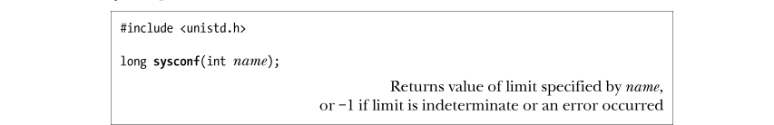</p>
<p>​        参数 name 应为定义于<unistd.h>文件中的_SC_系列常量之一，其中部分在表 11-1 中已有所罗列。限制值将作为函数结果返回。若无法确定某一限制，则 sysconf()返回−1。若调用 sysconf()函数时发生错误，也会返回−1。（唯一指定的错误是 EINVAL，表示 name 无效。）为区别上述两种情况，必须在调用函数前将 errno 设置为 0，如果调用返回−1，且调用后 errno 值不为 0，那么调用 sysconf()函数时发生了错误。由 sysconf()函数所返回的限制值类型总是（长）整型（pathconf()和 fpathconf()也是如此）。在对 sysconf()函数的原理描述中，SUSv3 特意指出，一度曾考虑将字符串作为可能的返回值，但由于实现和使用的复杂性而最终放弃了这一构想。程序清单 11-1 所示为调用 sysconf()来展示各种系统限制。在某一 Linux 2.6.31/x86-32 系统上运行该程序，将产生如下结果：</p>
<p>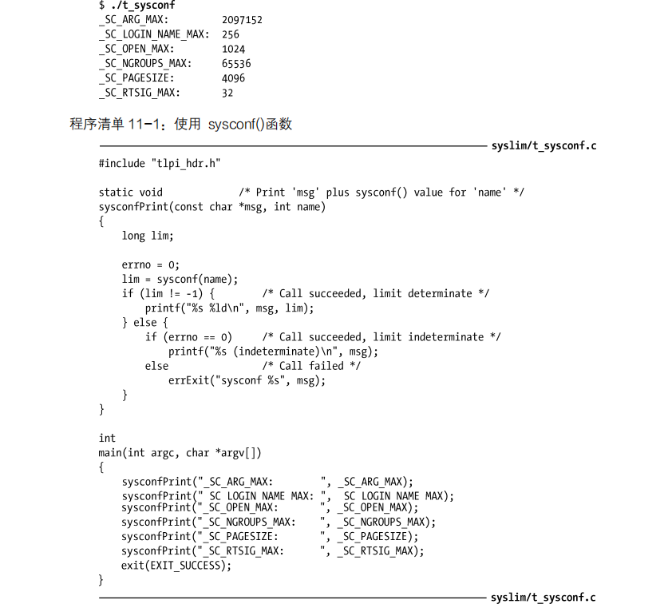</p>
<p>SUSv3 要求，针对特定限制，调用 sysconf()所获取的值在调用进程的生命周期内应保持不变。例如，就可以这样认定：针对_SC_PAGESIZE 限制的返回值在进程运行期间不会改变。</p>
<pre class="line-numbers language-none"><code class="language-none">在 Linux 系统中，对于上述要求，有一些（合理的）例外。进程能够使用 setrlimit()（见 36.2节）修改进程的各种资源限制，这会波及由 sysconf()所报告的限制值：RLIMIT_NOFILE，该限制确定进程能够打开的文件数量（_SC_OPEN_MAX）；RLIMIT_NPROC(实际并未纳入SUSv3 中 ) ，即允许进程基于每用户所创建的子进程限额（ _SC_CHILD_MAX ）；RLIMIT_STACK，始于 Linux 2.6.23 版本，该限制确定了进程的命令行参数和环境变量所占存储空间的限额（_SC_ARG_MAX，具体参见 execve(2)手册页）。<span aria-hidden="true" class="line-numbers-rows"><span></span></span></code></pre>
<h2 id="11-3-运行时获取与文件相关的限制（和选项）"><a href="#11-3-运行时获取与文件相关的限制（和选项）" class="headerlink" title="11.3 运行时获取与文件相关的限制（和选项）"></a>11.3 运行时获取与文件相关的限制（和选项）</h2><p>​        pathconf()和 fpathconf()函数允许应用程序在运行时获取文件相关的限制值。</p>
<p>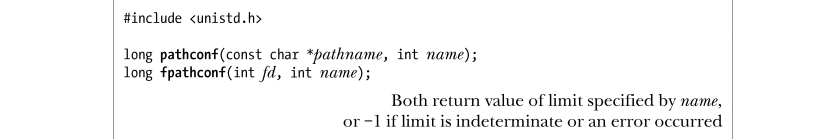</p>
<p>​        pathconf()和 fpathconf()之间唯一的区别在于对文件或目录的指定方式。pathconf()采用路径名方式来指定，而 fpathconf()则使用（之前已经打开的）文件描述符。参数 name 则是定义于<unistd.h>文件中的_PC_系列常量之一，在表 11-1 中已经列举了其中的一部分。表 11-2 又针对表 11-1 中展示的_PC_*常量，提供了更深入的细节。限制的值将作为函数结果返回。如要区分限制值不确定与发生错误的情况，应对方式与sysconf()相同。有别于 sysconf()函数，SUSv3 并不要求 pathconf()和 fpathconf()的返回值在进程的生命周期内保持恒定。这是因为，例如，在进程运行期间，可能会卸载一个文件系统，然后再以不同特性重新装载该文件系统。</p>
<div class="table-container">
<table>
<thead>
<tr>
<th style="text-align:left">常量</th>
<th style="text-align:left">说明</th>
</tr>
</thead>
<tbody>
<tr>
<td style="text-align:left">_PC_NAME_MAX</td>
<td style="text-align:left">针对目录，返回该目录下文件命名的最大长度，对于其他文件类型，则未作规定</td>
</tr>
<tr>
<td style="text-align:left">_PC_PATH_MAX</td>
<td style="text-align:left">对于目录，返回该目录中相对路径名的最大长度，对于其他文件类型，则未作规定</td>
</tr>
<tr>
<td style="text-align:left">_PC_PIPE_BUF</td>
<td style="text-align:left">对于 FIFO 或者管道，返回一个应用于引用文件的值。对于目录，返回的值应用于在该目录下创建的一 FIFO。对于其他文件类型，则未作规定</td>
</tr>
</tbody>
</table>
</div>
<p>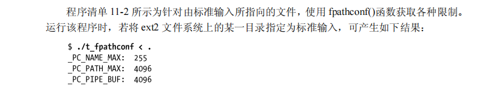</p>
<p>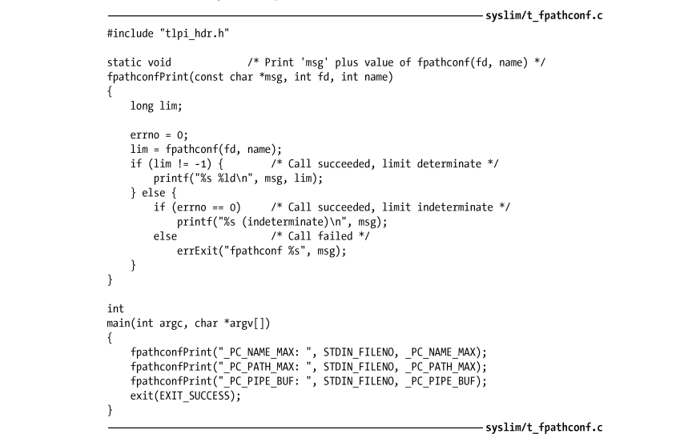</p>
<h2 id="不确定的限制"><a href="#不确定的限制" class="headerlink" title="不确定的限制"></a>不确定的限制</h2><p>​        有时，系统实现并未将一些系统限制定义为限制常量（比如：PATH_MAX），并且 sysconf()或 pathconf()在返回相应限制(比如_PC_PATH_MAX)时会将其归为不确定。对此，可采用如下策略之一。</p>
<ul>
<li>当编写一个可在多个 UNIX 实现间移植的应用程序时，可选择使用 SUSv3 所规定的最低限制值。此类以_POSIX_*_MAX 形式命名的常量。此方法有时并不可行，因为该限制之低已经超乎实际情况，正如_POSIX_PATH_MAX 和_POSIX_OPEN_MAX 的情况</li>
<li>在某些情况下，切实可行的解决方法是省去对限制的检查，取而代之以执行相关的系统调用或库函数。如果调用失败，且 errno 表明出错是由于超出了系统限制时，那么可以根据需要调整应用的行为，并再次尝试调用。例如，对于可发送给进程的实时信号队列长度，大多数 UNIX实现都进行了强制限制。一旦达到限额，试图进一步发送信号（使用 sigqueue()函数）将以失败告终，且会将错误号 errorno 置为 EAGAIN。这时，发送进程只需简单重试即可，或许是在等待片刻之后。与之相类似，试图打开一个文件时，若文件命名过长，将会产生 ENAMETOOLONG 错误，之后应用程序可以一个更加简短的命名进行重试。</li>
<li>自行编写程序或函数，以推断或估算限制值。无论在哪一种情况下，都会调用相关的sysconf()或pathconf()，若限制不确定，则函数将返回一合理估值。虽然有欠完美，但这种解决方案往往在实践中是可行的</li>
<li>也可以利用诸如 GNU Autoconf 之类的扩展工具，该工具能够确定各种系统特性及限制存在与否、如何设置。Autoconf 程序可基于其收集到的信息而生成头文件，并能在C 程序中将其包含在内</li>
</ul>
</article><div class="post-copyright"><div class="post-copyright__author"><span class="post-copyright-meta">文章作者: </span><span class="post-copyright-info"><a target="_blank" rel="noopener" href="https://github.com/Charliechen114514">Charlie Chen</a></span></div><div class="post-copyright__type"><span class="post-copyright-meta">文章链接: </span><span class="post-copyright-info"><a href="http://charliechen114514.github.io/2023/08/30/Linux%E6%BC%AB%E6%B8%B8%E2%80%94%E2%80%94%E6%97%B6%E9%97%B4%E4%B8%8E%E7%B3%BB%E7%BB%9F%E9%99%90%E5%88%B6/">http://charliechen114514.github.io/2023/08/30/Linux%E6%BC%AB%E6%B8%B8%E2%80%94%E2%80%94%E6%97%B6%E9%97%B4%E4%B8%8E%E7%B3%BB%E7%BB%9F%E9%99%90%E5%88%B6/</a></span></div><div class="post-copyright__notice"><span class="post-copyright-meta">版权声明: </span><span class="post-copyright-info">全体目光向我看齐，我宣布个事！是我Charliechen写的这篇文章！(?)</span></div></div><div class="tag_share"><div class="post-meta__tag-list"><a class="post-meta__tags" href="/tags/C-C-Linux/">C/C++. Linux</a></div><div class="post_share"><div class="social-share" data-image="/img/passagepage.png" data-sites="facebook,twitter,wechat,weibo,qq"></div><link rel="stylesheet" href="https://cdn.jsdelivr.net/npm/butterfly-extsrc/sharejs/dist/css/share.min.css" media="print" onload="this.media='all'"><script src="https://cdn.jsdelivr.net/npm/butterfly-extsrc/sharejs/dist/js/social-share.min.js" defer></script></div></div><nav class="pagination-post" id="pagination"><div class="prev-post pull-left"><a href="/2023/09/05/Deep-Qt-Learn-1/" title="Deep Qt Learn-1"><div class="pagination-info"><div class="label">上一篇</div><div class="prev_info">Deep Qt Learn-1</div></div></a></div><div class="next-post pull-right"><a href="/2023/08/30/Linux%E6%BC%AB%E6%B8%B8%E2%80%94%E2%80%94%E7%94%A8%E6%88%B7%E4%B8%8E%E7%BB%84%EF%BC%8C%E8%BF%9B%E7%A8%8B%E5%87%AD%E8%AF%81/" title="Linux漫游——用户与组，进程凭证"><div class="pagination-info"><div class="label">下一篇</div><div class="next_info">Linux漫游——用户与组，进程凭证</div></div></a></div></nav><div class="relatedPosts"><div class="headline"><i class="fas fa-thumbs-up fa-fw"></i><span>相关推荐</span></div><div class="relatedPosts-list"><div><a href="/2023/08/15/Linux%E6%BC%AB%E6%B8%B8%E2%80%94%E2%80%94%E5%AF%BC%E8%AE%BA/" title="Linux漫游——导论"><div class="content is-center"><div class="date"><i class="far fa-calendar-alt fa-fw"></i> 2023-08-15</div><div class="title">Linux漫游——导论</div></div></a></div><div><a href="/2023/08/16/Linux%E6%BC%AB%E6%B8%B8%E2%80%94%E2%80%94%E7%B3%BB%E7%BB%9F%E8%B0%83%E7%94%A8/" title="Linux漫游——系统调用"><div class="content is-center"><div class="date"><i class="far fa-calendar-alt fa-fw"></i> 2023-08-16</div><div class="title">Linux漫游——系统调用</div></div></a></div><div><a href="/2023/08/17/Unix-network-programming-Guidance/" title="Unix网络编程 - 1"><div class="content is-center"><div class="date"><i class="far fa-calendar-alt fa-fw"></i> 2023-08-17</div><div class="title">Unix网络编程 - 1</div></div></a></div><div><a href="/2023/08/19/Linux%E6%BC%AB%E6%B8%B8%E2%80%94%E2%80%94%E6%96%87%E4%BB%B6IO%E6%93%8D%E4%BD%9C/" title="Linux漫游——文件IO操作"><div class="content is-center"><div class="date"><i class="far fa-calendar-alt fa-fw"></i> 2023-08-19</div><div class="title">Linux漫游——文件IO操作</div></div></a></div><div><a href="/2023/08/20/%E5%B5%8C%E5%85%A5%E5%BC%8FC%E4%BF%AE%E5%85%BB%E2%80%94%E2%80%94%E5%89%8D%E5%AF%BC/" title="嵌入式C修养——前导"><div class="content is-center"><div class="date"><i class="far fa-calendar-alt fa-fw"></i> 2023-08-20</div><div class="title">嵌入式C修养——前导</div></div></a></div><div><a href="/2023/08/23/TCP-IP-%E7%BD%91%E7%BB%9C%E7%BC%96%E7%A8%8B%E7%AC%94%E8%AE%B0%E2%80%94%E2%80%941%EF%BC%8C2%EF%BC%8C3/" title="TCP&#x2F;IP 网络编程笔记——1，2，3"><div class="content is-center"><div class="date"><i class="far fa-calendar-alt fa-fw"></i> 2023-08-23</div><div class="title">TCP&#x2F;IP 网络编程笔记——1，2，3</div></div></a></div></div></div></div><div class="aside-content" id="aside-content"><div class="card-widget card-info"><div class="is-center"><div class="avatar-img"></div><div class="author-info__name">Charlie Chen</div><div class="author-info__description"></div></div><div class="card-info-data site-data is-center"><a href="/archives/"><div class="headline">文章</div><div class="length-num">37</div></a><a href="/tags/"><div class="headline">标签</div><div class="length-num">23</div></a><a href="/categories/"><div class="headline">分类</div><div class="length-num">0</div></a></div><a id="card-info-btn" target="_blank" rel="noopener" href="https://github.com/Charliechen114514"><i class="fab fa-github"></i><span>Follow Me</span></a><div class="card-info-social-icons is-center"><a class="social-icon" href="https://github.com/Charliechen114514" target="_blank" title="Github"><i class="fab fa-github"></i></a><a class="social-icon" href="http://wpa.qq.com/msgrd?v=3&amp;uin=725610365&amp;site=qq&amp;menu=yes" target="_blank" title="QQ"><i class="fab fa-qq"></i></a></div></div><div class="card-widget card-announcement"><div class="item-headline"><i class="fas fa-bullhorn fa-shake"></i><span>公告</span></div><div class="announcement_content">合并了大部分博客，并且优化了目录和标签！部分老博客删除，数据结构部分将会用Algorithm_in_C为大纲重写，可以期待一下（）</div></div><div class="sticky_layout"><div class="card-widget" id="card-toc"><div class="item-headline"><i class="fas fa-stream"></i><span>目录</span><span class="toc-percentage"></span></div><div class="toc-content"><ol class="toc"><li class="toc-item toc-level-1"><a class="toc-link" href="#%E6%97%B6%E9%97%B4"><span class="toc-number">1.</span> <span class="toc-text">时间</span></a><ol class="toc-child"><li class="toc-item toc-level-2"><a class="toc-link" href="#10-1-%E6%97%A5%E5%8E%86%E6%97%B6%E9%97%B4%EF%BC%88Calendar-Time%EF%BC%89"><span class="toc-number">1.1.</span> <span class="toc-text">10.1 日历时间（Calendar Time）</span></a></li><li class="toc-item toc-level-2"><a class="toc-link" href="#10-2-%E6%97%B6%E9%97%B4%E8%BD%AC%E6%8D%A2%E5%87%BD%E6%95%B0"><span class="toc-number">1.2.</span> <span class="toc-text">10.2 时间转换函数</span></a><ol class="toc-child"><li class="toc-item toc-level-3"><a class="toc-link" href="#10-2-1-%E5%B0%86-time-t-%E8%BD%AC%E6%8D%A2%E4%B8%BA%E5%8F%AF%E6%89%93%E5%8D%B0%E6%A0%BC%E5%BC%8F"><span class="toc-number">1.2.1.</span> <span class="toc-text">10.2.1 将 time_t 转换为可打印格式</span></a></li><li class="toc-item toc-level-3"><a class="toc-link" href="#10-2-2-time-t-%E5%92%8C%E5%88%86%E8%A7%A3%E6%97%B6%E9%97%B4%E4%B9%8B%E9%97%B4%E7%9A%84%E8%BD%AC%E6%8D%A2"><span class="toc-number">1.2.2.</span> <span class="toc-text">10.2.2 time_t 和分解时间之间的转换</span></a></li><li class="toc-item toc-level-3"><a class="toc-link" href="#10-2-3-%E5%88%86%E8%A7%A3%E6%97%B6%E9%97%B4%E5%92%8C%E6%89%93%E5%8D%B0%E6%A0%BC%E5%BC%8F%E4%B9%8B%E9%97%B4%E7%9A%84%E8%BD%AC%E6%8D%A2"><span class="toc-number">1.2.3.</span> <span class="toc-text">10.2.3 分解时间和打印格式之间的转换</span></a></li></ol></li><li class="toc-item toc-level-2"><a class="toc-link" href="#10-3-%E6%97%B6%E5%8C%BA"><span class="toc-number">1.3.</span> <span class="toc-text">10.3 时区</span></a><ol class="toc-child"><li class="toc-item toc-level-3"><a class="toc-link" href="#%E6%97%B6%E5%8C%BA%E5%AE%9A%E4%B9%89"><span class="toc-number">1.3.1.</span> <span class="toc-text">时区定义</span></a></li></ol></li><li class="toc-item toc-level-2"><a class="toc-link" href="#10-4-%E5%9C%B0%E5%8C%BA%EF%BC%88Locale%EF%BC%89"><span class="toc-number">1.4.</span> <span class="toc-text">10.4 地区（Locale）</span></a><ol class="toc-child"><li class="toc-item toc-level-3"><a class="toc-link" href="#%E5%9C%B0%E5%8C%BA%E5%AE%9A%E4%B9%89"><span class="toc-number">1.4.1.</span> <span class="toc-text">地区定义</span></a><ol class="toc-child"><li class="toc-item toc-level-4"><a class="toc-link" href="#%E4%B8%BA%E7%A8%8B%E5%BA%8F%E8%AE%BE%E7%BD%AE%E5%9C%B0%E5%8C%BA"><span class="toc-number">1.4.1.1.</span> <span class="toc-text">为程序设置地区</span></a></li></ol></li></ol></li><li class="toc-item toc-level-2"><a class="toc-link" href="#10-5-%E6%9B%B4%E6%96%B0%E7%B3%BB%E7%BB%9F%E6%97%B6%E9%92%9F"><span class="toc-number">1.5.</span> <span class="toc-text">10.5 更新系统时钟</span></a></li><li class="toc-item toc-level-2"><a class="toc-link" href="#10-6-%E8%BD%AF%E4%BB%B6%E6%97%B6%E9%92%9F%EF%BC%88jiffies%EF%BC%89"><span class="toc-number">1.6.</span> <span class="toc-text">10.6 软件时钟（jiffies）</span></a></li><li class="toc-item toc-level-2"><a class="toc-link" href="#10-7-%E8%BF%9B%E7%A8%8B%E6%97%B6%E9%97%B4"><span class="toc-number">1.7.</span> <span class="toc-text">10.7 进程时间</span></a><ol class="toc-child"><li class="toc-item toc-level-4"><a class="toc-link" href="#%E7%A4%BA%E4%BE%8B%E7%A8%8B%E5%BA%8F"><span class="toc-number">1.7.0.1.</span> <span class="toc-text">示例程序</span></a></li></ol></li></ol></li><li class="toc-item toc-level-2"><a class="toc-link" href="#10-8-%E6%80%BB%E7%BB%93"><span class="toc-number">1.8.</span> <span class="toc-text">10.8 总结</span></a></li></ol></li><li class="toc-item toc-level-1"><a class="toc-link" href="#%E7%B3%BB%E7%BB%9F%E9%99%90%E5%88%B6%E5%92%8C%E9%80%89%E9%A1%B9"><span class="toc-number">2.</span> <span class="toc-text">系统限制和选项</span></a><ol class="toc-child"><li class="toc-item toc-level-2"><a class="toc-link" href="#11-1-%E7%B3%BB%E7%BB%9F%E9%99%90%E5%88%B6"><span class="toc-number">2.1.</span> <span class="toc-text">11.1 系统限制</span></a><ol class="toc-child"><li class="toc-item toc-level-4"><a class="toc-link" href="#%E8%BF%90%E8%A1%8C%E6%97%B6%E6%81%92%E5%AE%9A%E5%80%BC%EF%BC%88%E5%8F%AF%E8%83%BD%E4%B8%8D%E7%A1%AE%E5%AE%9A%EF%BC%89"><span class="toc-number">2.1.0.1.</span> <span class="toc-text">运行时恒定值（可能不确定）</span></a></li><li class="toc-item toc-level-4"><a class="toc-link" href="#%E8%B7%AF%E5%BE%84%E5%90%8D%E5%8F%98%E9%87%8F%E5%80%BC"><span class="toc-number">2.1.0.2.</span> <span class="toc-text">路径名变量值</span></a></li><li class="toc-item toc-level-4"><a class="toc-link" href="#%E8%BF%90%E8%A1%8C%E6%97%B6%E5%8F%AF%E5%A2%9E%E5%8A%A0%E5%80%BC"><span class="toc-number">2.1.0.3.</span> <span class="toc-text">运行时可增加值</span></a></li><li class="toc-item toc-level-4"><a class="toc-link" href="#%E5%AF%B9%E9%80%89%E5%AE%9A-SUSv3-%E9%99%90%E5%88%B6%E7%9A%84%E6%80%BB%E7%BB%93"><span class="toc-number">2.1.0.4.</span> <span class="toc-text">对选定 SUSv3 限制的总结</span></a></li></ol></li></ol></li><li class="toc-item toc-level-2"><a class="toc-link" href="#11-2-%E5%9C%A8%E8%BF%90%E8%A1%8C%E6%97%B6%E8%8E%B7%E5%8F%96%E7%B3%BB%E7%BB%9F%E9%99%90%E5%88%B6%EF%BC%88%E5%92%8C%E9%80%89%E9%A1%B9%EF%BC%89"><span class="toc-number">2.2.</span> <span class="toc-text">11.2 在运行时获取系统限制（和选项）</span></a></li><li class="toc-item toc-level-2"><a class="toc-link" href="#11-3-%E8%BF%90%E8%A1%8C%E6%97%B6%E8%8E%B7%E5%8F%96%E4%B8%8E%E6%96%87%E4%BB%B6%E7%9B%B8%E5%85%B3%E7%9A%84%E9%99%90%E5%88%B6%EF%BC%88%E5%92%8C%E9%80%89%E9%A1%B9%EF%BC%89"><span class="toc-number">2.3.</span> <span class="toc-text">11.3 运行时获取与文件相关的限制（和选项）</span></a></li><li class="toc-item toc-level-2"><a class="toc-link" href="#%E4%B8%8D%E7%A1%AE%E5%AE%9A%E7%9A%84%E9%99%90%E5%88%B6"><span class="toc-number">2.4.</span> <span class="toc-text">不确定的限制</span></a></li></ol></li></ol></div></div><div class="card-widget card-recent-post"><div class="item-headline"><i class="fas fa-history"></i><span>最新文章</span></div><div class="aside-list"><div class="aside-list-item"><a class="thumbnail" href="/2023/10/16/MIT-6S081-online-course-I/" title="MIT_6S081_online_course I"></a><div class="content"><a class="title" href="/2023/10/16/MIT-6S081-online-course-I/" title="MIT_6S081_online_course I">MIT_6S081_online_course I</a><time datetime="2023-10-16T05:37:17.000Z" title="发表于 2023-10-16 13:37:17">2023-10-16</time></div></div><div class="aside-list-item"><a class="thumbnail" href="/2023/09/05/Deep-Qt-Learn-1/" title="Deep Qt Learn-1"></a><div class="content"><a class="title" href="/2023/09/05/Deep-Qt-Learn-1/" title="Deep Qt Learn-1">Deep Qt Learn-1</a><time datetime="2023-09-05T12:24:22.000Z" title="发表于 2023-09-05 20:24:22">2023-09-05</time></div></div><div class="aside-list-item"><a class="thumbnail" href="/2023/08/30/Linux%E6%BC%AB%E6%B8%B8%E2%80%94%E2%80%94%E6%97%B6%E9%97%B4%E4%B8%8E%E7%B3%BB%E7%BB%9F%E9%99%90%E5%88%B6/" title="Linux漫游——时间与系统限制"></a><div class="content"><a class="title" href="/2023/08/30/Linux%E6%BC%AB%E6%B8%B8%E2%80%94%E2%80%94%E6%97%B6%E9%97%B4%E4%B8%8E%E7%B3%BB%E7%BB%9F%E9%99%90%E5%88%B6/" title="Linux漫游——时间与系统限制">Linux漫游——时间与系统限制</a><time datetime="2023-08-30T07:55:36.000Z" title="发表于 2023-08-30 15:55:36">2023-08-30</time></div></div><div class="aside-list-item"><a class="thumbnail" href="/2023/08/30/Linux%E6%BC%AB%E6%B8%B8%E2%80%94%E2%80%94%E7%94%A8%E6%88%B7%E4%B8%8E%E7%BB%84%EF%BC%8C%E8%BF%9B%E7%A8%8B%E5%87%AD%E8%AF%81/" title="Linux漫游——用户与组，进程凭证"></a><div class="content"><a class="title" href="/2023/08/30/Linux%E6%BC%AB%E6%B8%B8%E2%80%94%E2%80%94%E7%94%A8%E6%88%B7%E4%B8%8E%E7%BB%84%EF%BC%8C%E8%BF%9B%E7%A8%8B%E5%87%AD%E8%AF%81/" title="Linux漫游——用户与组，进程凭证">Linux漫游——用户与组，进程凭证</a><time datetime="2023-08-30T07:53:54.000Z" title="发表于 2023-08-30 15:53:54">2023-08-30</time></div></div><div class="aside-list-item"><a class="thumbnail" href="/2023/08/30/Linux%E6%BC%AB%E6%B8%B8%E2%80%94%E2%80%94%E8%BF%9B%E7%A8%8B/" title="Linux漫游——进程"></a><div class="content"><a class="title" href="/2023/08/30/Linux%E6%BC%AB%E6%B8%B8%E2%80%94%E2%80%94%E8%BF%9B%E7%A8%8B/" title="Linux漫游——进程">Linux漫游——进程</a><time datetime="2023-08-30T07:52:37.000Z" title="发表于 2023-08-30 15:52:37">2023-08-30</time></div></div></div></div></div></div></main><footer id="footer"><div id="footer-wrap"><div class="copyright">&copy;2020 - 2023 By Charlie Chen</div><div class="framework-info"><span>框架 </span><a target="_blank" rel="noopener" href="https://hexo.io">Hexo</a><span class="footer-separator">|</span><span>主题 </span><a target="_blank" rel="noopener" href="https://github.com/jerryc127/hexo-theme-butterfly">Butterfly</a></div></div></footer></div><div id="rightside"><div id="rightside-config-hide"><button id="readmode" type="button" title="阅读模式"><i class="fas fa-book-open"></i></button><button id="darkmode" type="button" title="浅色和深色模式转换"><i class="fas fa-adjust"></i></button><button id="hide-aside-btn" type="button" title="单栏和双栏切换"><i class="fas fa-arrows-alt-h"></i></button></div><div id="rightside-config-show"><button id="rightside_config" type="button" title="设置"><i class="fas fa-cog fa-spin"></i></button><button class="close" id="mobile-toc-button" type="button" title="目录"><i class="fas fa-list-ul"></i></button><button id="go-up" type="button" title="回到顶部"><span class="scroll-percent"></span><i class="fas fa-arrow-up"></i></button></div></div><div id="local-search"><div class="search-dialog"><nav class="search-nav"><span class="search-dialog-title">搜索</span><span id="loading-status"></span><button class="search-close-button"><i class="fas fa-times"></i></button></nav><div class="is-center" id="loading-database"><i class="fas fa-spinner fa-pulse"></i><span>  数据库加载中</span></div><div class="search-wrap"><div id="local-search-input"><div class="local-search-box"><input class="local-search-box--input" placeholder="搜索文章" type="text"/></div></div><hr/><div id="local-search-results"></div></div></div><div id="search-mask"></div></div><div><script src="/js/utils.js"></script><script src="/js/main.js"></script><script src="https://cdn.jsdelivr.net/npm/@fancyapps/ui/dist/fancybox.umd.min.js"></script><script src="/js/search/local-search.js"></script><div class="js-pjax"><script>if (!window.MathJax) {
  window.MathJax = {
    tex: {
      inlineMath: [ ['$','$'], ["\\(","\\)"]],
      tags: 'ams'
    },
    chtml: {
      scale: 1.1
    },
    options: {
      renderActions: {
        findScript: [10, doc => {
          for (const node of document.querySelectorAll('script[type^="math/tex"]')) {
            const display = !!node.type.match(/; *mode=display/)
            const math = new doc.options.MathItem(node.textContent, doc.inputJax[0], display)
            const text = document.createTextNode('')
            node.parentNode.replaceChild(text, node)
            math.start = {node: text, delim: '', n: 0}
            math.end = {node: text, delim: '', n: 0}
            doc.math.push(math)
          }
        }, ''],
        insertScript: [200, () => {
          document.querySelectorAll('mjx-container').forEach(node => {
            if (node.hasAttribute('display')) {
              btf.wrap(node, 'div', { class: 'mathjax-overflow' })
            } else {
              btf.wrap(node, 'span', { class: 'mathjax-overflow' })
            }
          });
        }, '', false]
      }
    }
  }
  
  const script = document.createElement('script')
  script.src = 'https://cdn.jsdelivr.net/npm/mathjax/es5/tex-mml-chtml.min.js'
  script.id = 'MathJax-script'
  script.async = true
  document.head.appendChild(script)
} else {
  MathJax.startup.document.state(0)
  MathJax.texReset()
  MathJax.typeset()
}</script><link rel="stylesheet" type="text/css" href="https://cdn.jsdelivr.net/npm/katex/dist/katex.min.css"><script src="https://cdn.jsdelivr.net/npm/katex/dist/contrib/copy-tex.min.js"></script><script>(() => {
  document.querySelectorAll('#article-container span.katex-display').forEach(item => {
    btf.wrap(item, 'div', { class: 'katex-wrap'})
  })
})()</script></div><script id="click-show-text" src="https://cdn.jsdelivr.net/npm/butterfly-extsrc/dist/click-show-text.min.js" data-mobile="false" data-text="哼啊啊啊啊啊啊啊啊啊啊啊啊,人民万岁！,兄啊，别点力" data-fontsize="15px" data-random="false" async="async"></script><script async data-pjax src="//busuanzi.ibruce.info/busuanzi/2.3/busuanzi.pure.mini.js"></script></div></body></html>